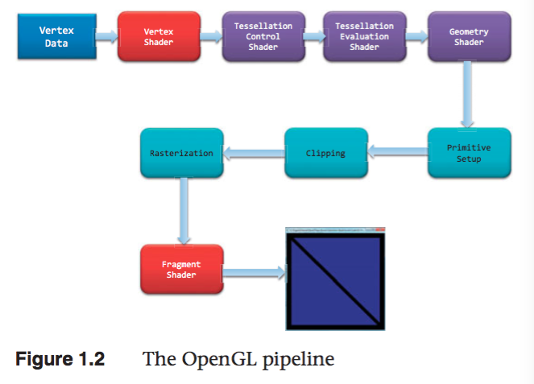
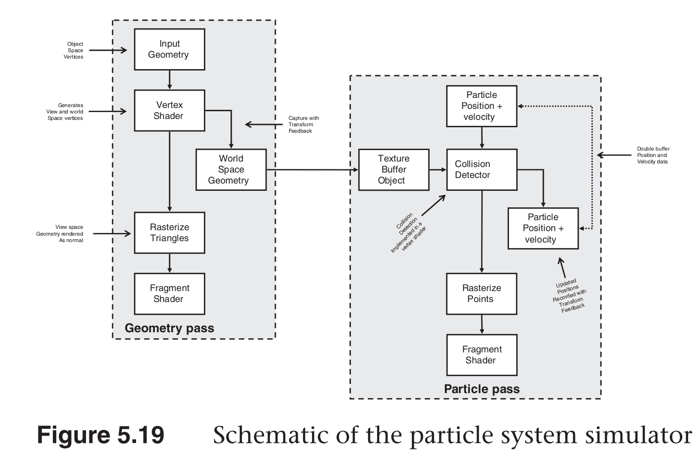
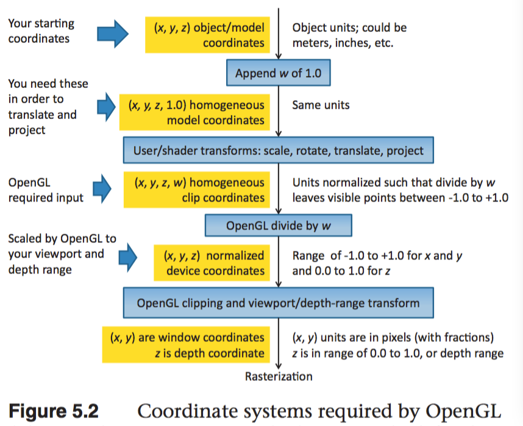

OpenGL
Table of Contents
- OpenGL Programming Guide ver8
- Introduction to OpenGL
- Shader Fundamentals
- Drawing with OpenGL
- Color,Pixels,and Framebuffers
- Viewing Transformations,Clipping,and Feedback
- Textures
- 一、Texture Mapping
- 二、Basic Texture Types
- 三、Creating and Initializing Textures
- 四、Proxy Textures
- 五、Specifying Texture Data
- 六、Sampler Objects
- 七、Using Textures
- 八、Complex Texture Types
- 九、Texture Views
- 十、Compressed Textures
- 十一、Filtering
- 十二、Advanced Texture Lookup Functions
- 十三、Point Sprites
- 十四、Rendering to Texture Maps
- 十五、贴图最佳实践
- Light and Shadow
- Procedural Texturing
- Tessellation Shaders
- Geometry Shaders
- Memory
- Compute Shaders
- Q&A
- Qt OpenGL 升级
- 坐标系
- 设置缩放变换矩阵时需要将 w 设置为 1，否则缩放无效
- shader 中不使用的 uniform 会被自动移除
- Qt 开启 c++11
- glGetError glGetUniformLocation bug
- 绘制的物体没有显示出来
- Qt 包含库头文件
- 不能将 build 目录放在项目目录下，否则复制目录会递归死循环
- GTimerMgr 中 Schedule(target,task,…)task 不能用 std::function
- 注意： vector 遍历删除照成 iterator 失效的问题
- 实现自定义的 LookUp 时，需要注意 OpenGL 中矩阵的存储是列主序的
- 旋转摄像机画面没有变化：请检查一下 QOpenGLWidget 是否开启了每帧执行 update 的操作！
- 物体贴图为黑白颜色时，检查 glTexImage2D 的 format 参数是否正确。
- shader 中定义的变量需要进行初始化，否则其值是随机值。
- 光照通常不会影响物体的透明度，所以光照计算中，颜色的 alpha 值通常是不变的。
- 什么是摄像机空间（视觉空间、观察空间）？
- 光照计算在视觉坐标系下进行有什么好处？
- 几种光照成分的名称
- VBO 和 VAO 的区别
- 参考链接：
- OpenGL Version
《OpenGL Programming Guide,Eighth Edition》读书笔记
OpenGL note.
<!– more –>
OpenGL Programming Guide ver8
Introduction to OpenGL
一 搭建开发环境
1 安装 PyQt5 PyOpenGL
brew install pyqt5
./easy_install-3.5 PyOpenGL
2 安装 PyCharm 配置 PyCharm
http://blog.csdn.net/a359680405/article/details/45074761
二 OpenGL 渲染管线

1 准备向 OpenGL 传输数据
OpenGL 需要将所有的数据都保存到缓存对象(buffer object)中,它相当于由 OpenGL 服务端维护的
一块内存区域。我们可以使用多种方式来创建这样的数据缓存,不过最常用 的方法就是使用例 1.1 中的
glBufferData() 命令。我们可能还需要对缓存做一些额外的设置,相关的内容请参见第 3 章。
2 将数据传输到 OpenGL
当将缓存初始化完毕之后,我们可以通过调用 OpenGL 的一个绘制命令来请求渲染几何图元,例 1.1 中
的 glDrawArrays() 就是一个常用的绘制命令。OpenGL 的绘制通常就是将顶点数据传输到 OpenGL
服务端。我们可以将一个顶点视为一个需要统一处理的数据包。这个包中的数据可以是我们需要的任何数
据(也就是说,我们自己负责定义构成顶点的所有数据),通常其中几乎始终会包含位置数据。其他的数据
可能用来决定一个像素的最终颜色。第 3 章会更详细地介绍绘制命令的内容。
3 顶点着色
对于绘制命令传输的每个顶点,OpenGL 都会调用一个顶点着色器来处理顶点相关的数据。根据其他光栅化
之前的着色器的活跃与否,顶点着色器可能会非常简单,例如,只是 将数据复制并传递到下一个着色阶段,这
叫做传递着色器(pass-through shader);它也可能 非常复杂,例如,执行大量的计算来得到顶点在屏幕
上的位置(一般情况下,我们会用到变换矩阵(transformation matrix)的概念,参见第 5 章),或者通
过光照的计算(参见第 7 章) 来判断顶点的颜色,或者其他一些技法的实现。通常来说,一个复杂的应用程
序可能包含许多个顶点着色器,但是在同一时刻只能有一个顶点着色器起作用。
4 细分着色
顶点着色器处理每个顶点的关联数据之后,如果同时激活了细分着色器(tessellation shader),那么它
将进一步处理这些数据。正如在第 9 章将会看到的,细分着色器会使用 Patch 来描述一个物体的形状,
并且使用相对简单的 Patch 几何体连接来完成细分的工作, 其结果是几何图元的数量增加,并且模型的外
观会变得更为平顺。细分着色阶段会用到两个着色器来分别管理 Patch 数据并生成最终的形状。
5 几何着色
下一个着色阶段— 几何着色— 允许在光栅化之前对每个几何图元做更进一步的处理,例如创建新的图元。这
个着色阶段也是可选的,但是我们在第 10 章里会体会到它的强大之处。
6 图元装配
前面介绍的着色阶段所处理的都是顶点数据,此外这些顶点之间如何构成几何图元的所有信息也会被传递到
OpenGL 当中。图元装配阶段将这些顶点与相关的几何图元之间组织起来,准备下一步的剪切和光栅化工
作。
7 剪切
顶点可能会落在视口(viewport)之外— 也就是我们可以进行绘制的窗口区域— 此 时与顶点相关的图元
会做出改动,以保证相关的像素不会在视口外绘制。这一过程叫做剪切(clipping),它是由 OpenGL
自动完成的。
8 光栅化
剪切之后马上要执行的工作,就是将更新后的图元传递到光栅化单元,生成对应的片元。我们可以将一个片
元视为一个“候选的像素”,也就是可以放置在帧缓存中的像素,但是它也可能被最终剔除,不再更新对应的
像素位置。之后的两个阶段将会执行片元的处理, 即片元着色和逐片元的操作。
9 片元着色
最后一个可以通过编程控制屏幕上显示颜色的阶段,叫做片元着色阶段。在这个阶段中,我们使用着色器
来计算片元的最终颜色(尽管在下一个阶段(逐片元的操作)时可能 还会改变颜色一次)和它的深度值。片
元着色器非常强大,在这里我们会使用纹理映射的方式,对顶点处理阶段所计算的颜色值进行补充。如果
我们觉得不应该继续绘制某个片元, 在片元着色器中还可以终止这个片元的处理,这一步叫做片元的
丢弃(discard)。
如果我们需要更好地理解处理顶点的着色器和片元着色器之间的区别,可以用这种方法来记忆:顶点着色
(包括细分和几何着色)决定了一个图元应该位于屏幕的什么位置,而片元着色使用这些信息来决定某个片
元的颜色应该是什么。
10 逐片元的操作 (lesson 4)
除了我们在片元着色器里做的工作之外,片元操作的下一步就是最后的独立片元处理过程。在这个阶段里会
使用深度测试(depth test,或者通常也称作 z-buffering)和模板测试(stencil test)的方式来决
定一个片元是否是可见的。
如果一个片元成功地通过了所有激活的测试,那么它就可以被直接绘制到帧缓存中了,它对应的像素的颜色
值(也可能包括深度值)会被更新,如果开启了融合(blending)模式, 那么片元的颜色会与该像素当前的
颜色相叠加,形成一个新的颜色值并写入帧缓存中。
（1）Scissor test
（2）Multisample fragment operations
（3）Stencil test
（4）Depth test
（5）Blending
（6）Dithering // 抖动
（7）Logical operations
像素数据的传输也有一条路径。通常来说,像素数据来自图像 文件,尽管它也可能是 OpenGL 直接渲染的。
像素数据通常保存在纹理贴图当中,通过纹理映射的方式调用。在纹理阶段中我们可以从一张或者多张纹理
贴图中查找所需的数据值。
Shader Fundamentals
Shaders and OpenGL
从 3.1 版本开始，固定函数管线从 CoreProfile 中移除了，shaders 成为强制要求的。
OpenGL's Programmable pipline
4.3 版本的图形管线包含 4 个阶段：
(1) vertex shading stage. [mandatory]
接收 vertex-buffer 对象指定的顶点数据，分别处理每个顶点。
(2) tessellation shading stage [optional]
在 OpenGL 管线中生成额外的几何图元。激活该阶段时，它将从顶点着色阶段接收数据，并做进一步处理。
(3) geometry shading stage [optional]
可以修改 OpenGL 管线中的几何图元，分别处理每个几何图元（修改、忽略几何图元）。
(4) fragment shading stage [mandatory]
该阶段处理由光栅化程序产生的 fragments，在这个阶段片段的颜色和深度值被计算。
(5) compute shading stage
该阶段不是图形管线的一部分。
数据传输
shader 通过 in/out(输入/输出)变量来进行数据传递。
uniform 为 OpenGL 应用程序定义变量，在 shader 中只能读不能修改。
Shading Language
类型转换
隐式类型转换
int -> uint
int,uint -> float
int,uint,float -> double
显式类型转换
float f=10.0;
int ten=int(f);
聚合类型
| BaseType | 2D vec | 3D vec | 4D vec | MatrixTypes |
|---|---|---|---|---|
| float | vec2 | vec3 | vec4 | mat2 mat3 mat4 |
| mat2x2 mat2x3 mat2x4 | ||||
| mat3x2 mat3x3 mat3x4 | ||||
| mat4x2 mat4x3 mat4x4 | ||||
| double | dvec2 | dvec3 | dvec4 | dmat2 dmat3 dmat4 |
| dmat2x2 dmat2x3 dmat2x4 | ||||
| dmat3x2 dmat3x3 dmat3x4 | ||||
| dmat4x2 dmat4x3 dmat4x4 | ||||
| int | ivec2 | ivec3 | ivec4 | X |
| uint | uvec2 | uvec3 | uvec4 | X |
| bool | bvec2 | bvec3 | bvec4 | X |
Structrues
struct Particle { float lifetime; vec3 position; vec3 velocity; };
Array
float coeff[3] = float[3](1.0,2.0,3.0); float[3] coeff = float[3](1.0,2.0,3.0); coeff.length(); // =3 float coeff[3][5]; coeff[2].length(); // =5
Storage Qualifiers
| TypeModifier | Description |
|---|---|
| const | 标记变量为只读 |
| =in | 输入变量 |
| =out | 输出变量 |
| =uniform | 从 App 传到 shader 的变量，shader 中只读 |
| buffer | 和 App 共享的读写内存 |
| shared | computer shader 使用。 |
// 初始化 shader 中 uniform array 数据的两种方法： uniform vec2 offsets[100]; // --方法 1-- for(GLuint i = 0; i < 100; i++) { stringstream ss; string index; ss << i; index = ss.str(); GLint location = glGetUniformLocation(shader.Program, ("offsets[" + index + "]").c_str()) glUniform2f(location, translations[i].x, translations[i].y); } // --方法 2-- GLint offset_uniform_local = glGetUniformLocation(program, "offsets"); glUniform2fv(offset_uniform_local,100,translations); //注意：下面这种方法是不可用的 glUniform1fv(offset_uniform_local,200,translations);
Function
returnType functionName([accessModifier] type1 variable1,[accessModifier] type2 variable2) { // function body return returnValue; } // -AccessModifier- -Description- // in 值被 copy 到函数 // const in 只读的 copy 到函数的值 // out 值被 copy 到函数外 // inout 值被 copy 到函数内、外
计算不变性
invariant 和 precise 可以保证 shader 中的计算不变性。
invariant 用于任何 shader 的输出变量。如果两个 shader 使用同一个表达式计算该输出变量，那么结果是相同的
invariant gl_Position; invariant centroid out vec3 Color;
centroid 在打开多点采样的时候，强迫一个片断输入变量的采样位于图元像素覆盖的区域，centroid 限定的任何顶点着色器输出，都必须有一个匹配的片断着色器输入也被 centroid 限定
#pragma STDGL invariant(all)
precise 用于任何函数返回值或任何计算变量。也可用于内置变量，用户变量。
precise gl_Position; precise out vec3 Location; precise vec3 subdivide(vec3 P1, vec3 P2) { // ..... }
Shader Preprocessor
#define #define LPos(n) gl_LightSource[n].position __LINE__ __FILE__ __VERSION__ #undef #if #ifdef #ifndef #else #elif #endif #error text 在编译 shader 时,向日志消息中插入 text #pragma options #pragma optimize(on) #pragma optimize(off) #pragma debug(on) #pragma debug(off) #extension options #extension extension_name : <directive> #extension all : <directive> // -Directive- -Description- // require 如果扩展不存在或扩展为 all,则标记一个错误 // enable 如果特定的扩展不存在则给一个警告,如果为 all,则标记一个错误 // warn 如果特定扩展不存在,或者使用了任意扩展,则给一个警告 // disable 如果扩展不支持,则产生一个错误或者警告 #version number #line options
Interface Blocks
概述
shader 和 app 或 shader 之间共享的变量可以组织为 blocks,Uniform 变量可以组织到 uniform blocks 中,
input 和 output 变量可以组织到 in/out blocks 中,shader 存储缓存组织到 buffer blocks 中.
uniform b { // uniform or in or out or buffer vec4 v1; // list of variables bool v2; // ... }; // access members as v1 and v2 uniform b { // uniform or in or out or buffer vec4 v1; // list of variables bool v2; // ... } name; // access members as name.v1 and name.v2
Uniform Block Layout Control
// -LayoutQualifier- -Description- // shared 指定 uniform block 被多个程序共享(这个是默认修饰) // packed 指定 uniform block 使用最小内存布局.uniform block 不能夸程序共享 // std140 使用标准布局. // std430 使用标准布局. // row_major uniform block 中的矩阵为行主序存储 // column_major uniform block 中的矩阵为列主序存储(这是默认方式) layout (shared, row_major) uniform { //..... };
在 app 中访问 Uniform blocks
(1) 返回 shader 中名称为 uniformBlockName 的 uniform block 索引
GLuint glGetUniformBlockIndex(GLuint program, const char* uniformBlockName);
e.g:
uboIndex = glGetUniformBlockIndex(program, "Uniforms");
(2) 获取 shader 中 index 为 uniformBlockIndex 的 uniform block 的名称为 pname 的参数的值
glGetActiveUniformBlockiv (GLuint program, GLuint uniformBlockIndex, GLenum pname, GLint *params);
e.g:
glGetActiveUniformBlockiv(program, uboIndex, GL_UNIFORM_BLOCK_DATA_SIZE, &uboSize);
(3) 依据 names 获取 shader 中对应 uniform 变量的索引
e.g:
glGetUniformIndices(program,NumUniforms, names, indices);
(4) 依据 uniform 变量的索引,获取其其他参数
glGetActiveUniformsiv (GLuint program, GLsizei uniformCount, const GLuint *uniformIndices, GLenum pname, GLint *params);
e.g:
glGetActiveUniformsiv(program,NumUniforms,indices,GL_UNIFORM_OFFSET, offset);
glGetActiveUniformsiv(program,NumUniforms,indices,GL_UNIFORM_SIZE, size);
glGetActiveUniformsiv(program,NumUniforms,indices,GL_UNIFORM_TYPE, type);
(5) 将当前绑定的缓冲区对象和索引为 index 的 uniform block 关联
void glBindBufferRange(GLenum target,GLuint index,GLuint buffer,GLintptr offset,GLsizeiptr size);
void glBindBufferBase(GLenum target,GLuint index,GLuint buffer);
e.g:
glBindBufferBase(GL_UNIFORM_BUFFER, uboIndex, ubo);
glBindBufferRange(GL_UNIFORM_BUFFER,ubo_index,ubo,ubo_offset[type],data_size);
GLint program = GLHelper::CreateShaderProgramWithFiles(":/vertex_UniformBlock.vert",":/fragment_UniformBlock.frag"); glUseProgram(program); GLuint uboIndex; GLint uboSize; GLuint ubo; GLvoid *buffer; uboIndex = glGetUniformBlockIndex(program, "Uniforms"); glGetActiveUniformBlockiv(program, uboIndex, GL_UNIFORM_BLOCK_DATA_SIZE, &uboSize); buffer = malloc(uboSize); if(buffer == NULL) { fprintf(stderr, "Unable to allocate buffer\n"); exit(EXIT_FAILURE); } else { enum {Translation, Scale, Rotation, Enabled, NumUniforms}; GLfloat scale = 0.5; GLfloat translation[] = {0.1, 0.1, 0.0}; GLfloat rotation[] = {90, 0.0, 0.0, 1.0}; GLboolean enabled = GL_TRUE; const char* names[NumUniforms] = { "translation", "scale", "rotation", "enabled" }; GLuint indices[NumUniforms]; GLint size[NumUniforms]; GLint offset[NumUniforms]; GLint type[NumUniforms]; glGetUniformIndices(program,NumUniforms, names, indices); glGetActiveUniformsiv(program,NumUniforms,indices,GL_UNIFORM_OFFSET, offset); glGetActiveUniformsiv(program,NumUniforms,indices,GL_UNIFORM_SIZE, size); glGetActiveUniformsiv(program,NumUniforms,indices,GL_UNIFORM_TYPE, type); memcpy( (GLchar*)buffer + offset[Translation], &translation, size[Translation] * GLHelper::TypeSize(type[Translation]) ); memcpy( (GLchar*)buffer + offset[Scale], &scale, size[Scale] * GLHelper::TypeSize(type[Scale]) ); memcpy( (GLchar*)buffer + offset[Rotation], &rotation, size[Rotation] * GLHelper::TypeSize(type[Rotation]) ); memcpy( (GLchar*)buffer + offset[Enabled], &enabled, size[Enabled] * GLHelper::TypeSize(type[Enabled]) ); glGenBuffers(1, &ubo); glBindBuffer(GL_UNIFORM_BUFFER, ubo); glBufferData(GL_UNIFORM_BUFFER, uboSize, buffer, GL_STATIC_DRAW); glBindBufferBase(GL_UNIFORM_BUFFER, uboIndex, ubo); glGenVertexArrays(NumVAOs, VAOs); glBindVertexArray(VAOs[Triangles]); GLfloat vertices[NumVertices][2] = { {-0.90, -0.90}, { 0.85, -0.90}, {-0.90, 0.85}, { 0.90, -0.85}, { 0.90, 0.90}, {-0.85, 0.90}, }; glGenBuffers(NumBuffers,VBuffers); glBindBuffer(GL_ARRAY_BUFFER, VBuffers[ArrayBuffer]); glBufferData(GL_ARRAY_BUFFER, sizeof(vertices), vertices, GL_STATIC_DRAW); glVertexAttribPointer(vPos,2,GL_FLOAT,GL_FALSE,0,BUFF_OFFSET(0)); glEnableVertexAttribArray(vPos); }
buffer blocks
buffer blocks 和 uniform block 相比，有两个优点：
(1) 着色器可以写入，修改 buffer blocks 的内容。
(2) buffer blocks 的大小可以在渲染之前再确定，而不是编译连接的时候。
buffer BufferObject {
int mode;
vec4 points[]; // 该数组的大小可以在渲染之前确定
};
In/Out Blocks
out Lighting { vec3 normal; vec2 bumpCoord; } in Lighting { vec3 normal; vec2 bumpCoord; };
Compiling Shaders
使用 shader 的步骤：
//==== 对于每个 shader object ==== //step 1. create a shader object. // 创建 shader 对象 GLuint glCreateShader(GLenum type); /* --type-- */ /* GL_VERTEX_SHADER */ /* GL_FRAGMENT_SHADER */ /* GL_TESS_CONTROL_SHADER */ /* GL_TESS_EVALUATION_SHADER */ /* GL_GEOMETRY_SHADER */ // 关联 shader 对象和 shader 源代码 void glShaderSource(GLuint shader,GLsizei count,const GLchar** string, const GLint* length); //step 2. compile your shader source into the object. // 编译 shader 源代码 void glCompileShader(GLuint shader); //step 3. verify that your shader compiled successfully void glGetShaderiv (GLuint shader, GLenum pname, GLint *params); void glGetShaderInfoLog(GLuint shader,GLsizei bufSize,GLsizei* length,char* infoLog); //==== 将多个 shader objects 连接到一个 shader 程序 ==== //step 1. create a shader program GLuint glCreateProgram(void); //step 2. attach the appropriate shader objects to the shader program. void glAttachShader(GLuint program,GLuint shader); void glDetachShader(GLuint program,GLuint shader); //step 3. link the shader program void glLinkProgram(GLuint program); //step 4. verify that the shader link phase completed successfully void glGetProgramiv (GLuint program, GLenum pname, GLint *params); void glGetProgramInfoLog (GLuint program, GLsizei bufSize, GLsizei *length, GLchar *infoLog); //step 5. use the shader for vertex or fragment processing void glUseProgram(GLuint program); GLboolean glIsShader(GLuint shader); GLboolean glIsProgram(GLuint program);
Shader Subroutines
GLSL Subroutine Setup
(1) 定义 Subroutine 类型
subroutine returnType subroutineType(type param, …);
e.g:
subroutine vec4 LightFunc(vec3);
(2) 使用前面定义好的 Subroutine 类型来定义一组 subroutine
subroutine (LightFunc) vec4 ambient(vec3 n)
{
return Materials.ambient;
}
subroutine (LightFunc) vec4 diffuse(vec3 n)
{
return Materials.diffuse*max(dot(normalize(n),LightVec.xyz),0.0);
}
(3) 指定一个 subroutine uniform 变量来保存你在程序中选择的 subroutine 函数指针
e.g:
subroutine uniform LightFunc materialShader;
Tips:
一个 subroutine 可以对应多个 subroutine 类型
subroutine void Type_1(); subroutine void Type_2(); subroutine (Type_1) Func_1(); subroutine (Type_2) Func_2(); subroutine (Type_1,Type_2) Func_12(); subroutine uniform Type_1 func_1; // 可以使用 Func_1 Func_12 subroutine uniform Type_2 func_2; // 可以使用 Func_2 Func_12
Selecting Shader Subroutines
GLint glGetSubroutineUniformLocation(GLuint program,GLenum shadertype,const char* name);
获得 subroutine uniform 的位置
GLuint glGetSubroutineIndex(GLuint program,GLenum shadertype,const char* name);
获得 subroutine 的 index
GLuint glUniformSubroutinesuiv(GLenum shadertype,GLsizei count,const GLuint* indices);
设置 count 个 subroutine uniforms 为 indices 中保存的值
e.g:
GLint materialShaderLoc; GLuint ambientIndex; GLuint diffuseIndex; glUseProgram(program); materialShaderLoc = glGetSubroutineUniformLocation(program,GL_VERTEX_SHADER,"materialShader"); if (materialShaderLoc < 0) { // Error } ambientIndex = glGetSubroutineIndex(program,GL_VERTEX_SHADER,"ambient"); diffuseIndex = glGetSubroutineIndex(program,GL_VERTEX_SHADER,"diffuse"); if(ambientIndex==GL_INVALID_INDEX || diffuseIndex==GL_INVALID_INDEX) { // } else { GLsizei n; glGetIntegerv(GL_MAX_SUBROUTINE_UNIFORM_LOCATIONS, &n); GLuint* indices = new GLuint[n]; indices[materialShaderLoc] = ambientIndex; glUniformSubroutinesuiv(GL_VERTEX_SHADER, n, indices); delete [] indices; }
Separate Shader Objects
4.1 版本之前的 OpenGL，应用程序执行期间，同一时间只能绑定一个 shader program。一个 vertex shader 处理一组几何元素然后交由多个 fragment shader 进行后续处理，这种情况下，你需要多个 shader program 对应，这些 shader program 都有相同的 vertex shader.
4.1 版本中 Separate shader objects 可以将不同 shader programs 的多个 shader 阶段组合到一个 program pipeline 中。其步骤如下：
//(1) 创建可重用的 shader program glProgramParameter(program, GL_PROGRAM_SEPARABLE, GL_TRUE); glCreateShaderProgramv() //(2) 使用新的 shader pipeline 将多个来自不同 shader programs 的 shader 阶段组合为一个可复用的 program pipeline. glGenProgramPipelines(); glBindProgramPipeline(); glUseProgramStages (GLuint pipeline, GLbitfield stages, GLuint program); //~Tips1~ 删除 program pipelines glDeleteProgramPipelines(); //~Tips2~ 设置 uniform 变量值: //set the active program object for a program pipeline object glActiveShaderProgram(); //set uniform glUniform*(); glProgramUniform*(); glProgramUniformMatrix*();
static GLuint LoadPipeline( const char* vsSource, const char* gsSource, const char* fsSource) { GLuint vsProgram = glCreateShaderProgramv(GL_VERTEX_SHADER, 1, &vsSource); GLuint gsProgram = glCreateShaderProgramv(GL_GEOMETRY_SHADER, 1, &gsSource); GLuint fsProgram = glCreateShaderProgramv(GL_FRAGMENT_SHADER, 1, &fsSource); GLuint pipeline; glGenProgramPipelines(1, &pipeline); glBindProgramPipeline(pipeline); glUseProgramStages(pipeline, GL_VERTEX_SHADER_BIT, vsProgram); glUseProgramStages(pipeline, GL_GEOMETRY_SHADER_BIT, gsProgram); glUseProgramStages(pipeline, GL_FRAGMENT_SHADER_BIT, fsProgram); // glUniform* now heed the "active" shader program rather than glUseProgram glActiveShaderProgram(pipeline, vsProgram); glUniform1f(fooLocation, 1.0f); return pipeline; }
Drawing with OpenGL
一、OpenGL Graphics Primitives
Points
- 点的大小
在程序中用 glPointSize(GLfloat size)来固定点的大小
在 shader 中用 gl_PointSize 来设置点的大小（只有 GL_PROGRAM_POINT_SIZE 为 GL_TRUE 才可用） - 点的光栅化规则
以点为中心以点的大小为边长的正方形包含的像素会被覆盖
Point Sprites
在渲染点的时候，点内的每个片段都会执行片段着色器。gl_PointCoord 变量可以在 fragment shader 中使用，用来表示片段在点内的坐标。
将 gl_PointCoord 当作贴图坐标来使用，可以代替简单的正方形块。结合 alpha 混合或片段丢弃，甚至可以创建形状各异的点 sprite。
Lines, Strips, and Loops
- 多条线按顺序连接不闭合被称作 line strip
- 多条线按顺序连接闭合被称作 line loop
- 线的宽度
glLineWidth 用来设置线的宽度
反锯齿开启后，线被当做长方体，其长度和线长度相同，宽度和线宽度相同。 - 线的光栅化规则
光栅化线的规则被称为钻石退出规则.当光栅化一条从 A 点到 B 点的线，如果一个点的正方形内所包含的钻石形状的边被经过，那么这个点就会被点亮，除非点 B 在这个钻石形状内。这样的话，如果还有一条线是从 B 点到 C 点，这样点 B 只被点亮一次。
Triangles Strips Fans
- Triangles Strips 某个三角形会公用前一个三角形后面两个顶点
- Triangles Fans 所有三角形公用第一个顶点
- 三角形渲染
当分开的多个三角形被渲染时，每个三角形的渲染是独立于其他三角形的。
一个三角形被渲染时，将三角形的每个顶点投影到屏幕空间形成三条边。如果一个采样落在三条边形成的半空间的正面，那么这个采样就会被点亮。
如果两个三角形共享一条边，没有任何一个采样点被两个三角形都包含。这样可以保证 OpenGL 光栅化包含共享边网格的可靠性，多个三角形之间不会有间隙，也不会过度绘制。
Rendering Polygons As Points, Outlines, or Solids
一个多边形有两面，正面和背面，依据那一面正对着观察者，可以有不同的渲染。这样就可以绘制固体的剖面图了，在剖面图中，物体的里面和外面有明显的差别。
// 默认情况下 face=GL_FRONT_AND_BACK mode=GL_FILL // 设置多边形渲染模式 void glPolygonMode(GLenum face, GLenum mode); // face = GL_FRONT_AND_BACK // mode = GL_POINT GL_LINE GL_FILL // Tips： 貌似不能为 FRONT 和 BACK 指定不同的 mode？ // 该特性已经从 opengl 3.2 版本开始，被标记为 deprecated，所以 face 的枚举值只能为 GL_FRONT_AND_BACK // https://stackoverflow.com/questions/19672014/why-is-gl-front-and-gl-back-deprecated-in-opengl-3-2-onwards
Reversing and Culling Polygon Faces
按照惯例，多边形顶点按照逆时针方向出现在屏幕上时被称作正向。
你可以使用方向一致（都是逆时针正向 或 都是顺时针反向）的多边形来构建任何“合理”的固体。
// 指定正面 void glFrontFace(GLenum mode); //GL_CCW counterclockwise //GL_CW clockwise // 指定剔除的面 void glCullFace(GLenum mode); // GL_FRONT GL_BACK GL_FRONT_AND_BACK void glEnable(GL_CULL_FACE);
二、Data in OpenGL Buffers
Creating and allocating buffers
调用 glGenBuffers 生成 buffer object 的名称。
void glGenBuffers(GLsizei n, GLuint *buffers);
---Buffer Binding Targets(points)---
Target Uses
GL_ARRAY_BUFFER 用于通过 glVertexAttribPointer 设置顶点数组数据指针
GL_COPY_READ/WRITE_BUFFER 用于 buffer 之间 copy 数据
GL_DRAW_INDIRECT_BUFFER 用于 indirect 绘制时保存绘制命令的参数
GL_ELEMENT_ARRAY_BUFFER 用于保存顶点的索引，执行索引绘制命令 glDrawElements
1. OpenGL 只能使用一个顶点缓存区，即 vertexPos uv normal 的索引需要都一相同
2. OBJ格式的模型每个属性都可以有各自的索引缓冲区。
3. 因为不同属性的索引需要相同，因此不同属性的数量也要相同。例如：一个三角形需要3个顶点，1个normal，3个uv。但是，OpenGL要求一个三角形需要3个顶点，3个normal，3个uv。
- http://www.opengl-tutorial.org/cn/intermediate-tutorials/tutorial-9-vbo-indexing/
GL_PIXEL_PACK_BUFFER 用于保存从图片对象(textures/framebuffer)读取的数据 glGetTexImage glReadPixels
GL_PIXEL_UNPACK_BUFFER 用于指定 glTexImage2D 的来源数据
GL_TEXTURE_BUFFER 将 buffer 绑定到 texture 对象上，这样就可以在 shader 中获取其数据了
GL_TRANSFORM_FEEDBACK_BUFFER 用于保存变换后的顶点属性
GL_UNIFORM_BUFFER 用于保存 Uniform 数据
//指定当前绑定的 target 类的 buffer 对象 或者 创建 target 类的 buffer 对象
glBindBuffer(GLenum target, GLuint buffer);
Getting Data into and out of Buffers
glBufferData(GLenum target,GLsizeiptr size,const GLvoid* data,GLenum usage)
glBufferSubData(GLenum target,GLintptr offset,GLsizeiptr size,const GLvoid* data);
glClearBufferData(GLenum target,GLenum internalfamat,GLenum format,GLenum type,const void* data)
glClearSubBufferData(GLenum target,GLenum internalfamat,GLintptr offset,GLintptr size,GLenum format,GLenum type,const void* data)
glCopyBufferSubData(GLenum readtarget,GLenum writetarget,GLintptr readoffset,GLintptr writeoffset,GLsizeiptr size)
Reading the contents of a buffer
void glGetBufferSubData(GLenum target,GLintptr offset,GLsizeiptr size,GLvoid* data);
Accessing the Content of Buffers
void* glMapBuffer(GLenum target,GLenum access)
—Access Modes—
GL_READ_ONLY
GL_WRITE_ONLY
GL_READ_WRITE
void glUnmapBuffer(GLenum target)
Asynchronous and explicit mapping
void* glMapBufferRange(GLenum target,GLintptr offset,GLsizeiptr length,GLbitfield access)
— Access —
GL_MAP_INVALIDATE_RANGE_BIT 指定范围的数据被忽略成为 invalid 数据，不能和 GL_MAP_READ_BIT 同时使用
GL_MAP_INVALIDATE_BUFFER_BIT 整个范围的数据被忽略成为 invalid 数据，不能和 GL_MAP_READ_BIT 同时使用
GL_MAP_FLUSH_EXPLICIT_BIT 指定更新数据的范围，和 GL_MAP_WRITE_BIT 同时使用
GL_MAP_UNSYNCHRONIZED_BIT 未指定该参数时，在返回关联的范围之前，OpenGL 会等待所有访问该 buffer 的操作完成
void glFlushMappedBufferRange(GLenum target,GLintptr offset,GLsizeiptr length);
Discarding Buffer Data
glInvalidateBufferData(GLuint buffer)
glInvalidateBufferSubData(GLuint buffer,GLintptr offset,GLsizeptr length)
Delete Buffer
删除指定的多个 buffers。buffer 对象被删除后，其名称变为不可用，但可被 glGenBuffers 重新复用。
glDeleteBuffers(GLsizei n, const GLuint* buffers);
三、Vertex Specification
VertexAttibPointer in Depth
void glVertexAttribPointer(GLuint index,GLint size,GLenum type,GLboolean normalized,GLsizei stride,const GLvoid* pointer)
e.g:
glVertexAttribPointer(index,size,GL_INT,GL_TRUE,stride,pointer)
数据被标准化的方法 result = source/(pow(32)-1)
glVertexAttribPointer(index,size,GL_UNSIGNED_BYTE,GL_TRUE,stride,pointer)
数据被标准化的方法 result = (2*source+1)/(pow(8)-1)
Integer Vertex Attributes
void glVertexAttribIPointer(GLuint index,GLint size,GLenum type,GLsizei stride,const GLvoid* pointer)
type – GL_BYPTE,GL_UNSIGNED_BYTE,GL_SHORT,GL_UNSIGNED_SHORT,GL_INT,GL_UNSIGNED_INT
Double-Precision Vertex Attributes
void glVertexAttribLPointer(GLuint index,GLint size,GLenum type,GLsizei stride,const GLvoid* pointer)
type – GL_DOUBLE
Packed Data Formats for Vertex Attributes
type –
GL_INT_2_10_10_10_REV
GL_UNSIGNED_INT_2_10_10_10_REV
Static Vertex-Attribute Specification
静态顶点属性是顶点属性的默认值。
void glVertexAttrib{1234}{fds}(GLuint index,TYPE values);
void glVertexAttrib{1234}{fds}v(GLuint index,const TYPE* values);
void glVertexAttrib4{bsifd ub us ui}v(GLuint index,const TYPE* values);
void glVertexAttrib4Nub(GLuint index,GLubyte x,GLubyte y,GLubyte z,GLubyte w);
void glVertexAttrib4N{bsi ub us ui}v(GLuint index,const TYPE* v);
void glVertexAttribI{1234}{i ui}(GLuint index, TYPE values);
void glVertexAttribI{123}{i ui}v(GLuint index,const TYPE *values);
void glVertexAttribI4{bsi ub us ui}v(GLuint index,const TYPE *values);
void glVertexAttribL{1234}(GLuint index, TYPE values);
void glVertexAttribL{1234}v(GLuint index, const TYPE *values);
四、OpenGL Drawing Commands
绘图命令
Open 的绘图命令可以粗略的分为两类：基于索引的和非索引的
// mode // GL_TRIANGLES, GL_LINE_LOOP, GL_LINES, and GL_POINTS. // GL_POINTS, GL_LINE_STRIP, GL_LINE_LOOP, GL_LINES, GL_LINE_STRIP_ADJACENCY, GL_LINES_ADJACENCY, GL_TRIANGLE_STRIP, GL_TRIANGLE_FAN, GL_TRIANGLES, GL_TRIANGLE_STRIP_ADJACENCY, GL_TRIANGLES_ADJACENCY and GL_PATCHES // 从第 first 个顶点数据开始，取 count 个顶点数据来绘制 mode 类型的几何图元 void glDrawArrays(GLenum mode,GLint first, GLsizei count); // type // GL_UNSIGNED_BYTE, GL_UNSIGNED_SHORT, or GL_UNSIGNED_INT // 从 GL_ELEMENT_ARRAY_BUFFER 缓冲区对象中，偏移 indices 字节开始，取 count 个 type 类型的索引值，依据索引值指定的顶点数据来绘制 mode 类型的几何图元 void glDrawElements(GLenum mode,GLsizei count,GLenum type,const GLvoid* indices); // basevertex 指定偏移多少个索引数据 (indices 指定偏移字节数) // 对 glDrawElements 的一个改进。增加了 GLint basevertex 参数，称为索引基数，所有的 index 数值都要加上这个数值后再进行绘制。 // 例如：GLushort vetex_indices[] = {0,1,2,3,4}; 下面的函数取的索引数据为{2,3,4} // glDrawElementsBaseVertex(GL_TRIANGLES, 3, GL_UNSIGNED_SHORT, NULL, 2); void glDrawElementsBaseVertex(GLenum mode, GLsizei count, GLenum type,const GLvoid *indices, GLint basevertex); // start 指定最小的索引值 end 指定最大的索引值 // 如果 获取到的索引值不在[start end]范围内，在我自己的 PC 电脑上也没有任何影响，几何图元依然可以渲染出来 // https://stackoverflow.com/questions/7549991/questions-about-gldrawrangeelements void glDrawRangeElements(GLenum mode, GLuint start, GLuint end, GLsizei count,GLenum type,const GLvoid *indices); void glDrawRangeElementsBaseVertex(GLenum mode,GLuint start, GLuint end,GLsizei count, GLenum type,const GLvoid *indices, GLint basevertex); // indirect 指定 GL_DRAW_INDIRECT_BUFFER 缓冲区的偏移，绘制命令的参数保存在 GL_DRAW_INDIRECT_BUFFER 缓冲区对象中 void glDrawArraysIndirect(GLenum mode,const GLvoid *indirect); void glDrawElementsIndirect(GLenum mode, GLenum type, const GLvoid * indirect); // primcount 指定几何图元的个数 first 和 count 都是包含 primcount 个元素的数组 // 一次函数调用绘制多个几何图元 void glMultiDrawArrays(GLenum mode, const GLint * first, const GLint * count, GLsizei primcount); void glMultiDrawElements(GLenum mode, const GLint * count, GLenum type,const GLvoid * const * indices, GLsizei primcount); void glMultiDrawElementsBaseVertex(GLenum mode, const GLint * count,GLenum type,const GLvoid * const * indices, GLsizei primcount,const GLint * baseVertex); void glMultiDrawArraysIndirect(GLenum mode, const void * indirect,GLsizei drawcount, GLsizei stride); void glMultiDrawElementsIndirect(GLenum mode, GLenum type,const void * indirect, GLsizei drawcount, GLsizei stride); typedef struct DrawArraysIndirectCommand_t { GLuint count; GLuint primCount; GLuint first; GLuint baseInstance; } DrawArraysIndirectCommand; typedef struct DrawElementsIndirectCommand_t { GLuint count; GLuint primCount; GLuint firstIndex; GLuint baseVertex; GLuint baseInstance; } DrawElementsIndirectCommand;
Restarting Primitives
void glPrimitiveRestartIndex(GLuint index); //设置 primitive_restart_index,使用 glDrawElements 系列的绘图命令时，当获取顶点的索引和 primitive_restart_index 相等时，会忽略当前索引，并且以下一个索引为新图元的第一个顶点。
五、Instanced Rendering
Instanced Rendering 是一连串执行相同绘制命令多次的一种方法。这是一种绘制大量几何体的高效方法，该方法只有很少的 API 调用。
instanced draw
// primCount 绘制几何图元的个数 void glDrawArraysInstanced(GLenum mode, GLint first, GLsizei count, GLsizei primCount); void glDrawElementsInstanced(GLenum mode, GLsizei count, GLenum type, const void* indices, GLsizei primCount); void glDrawElementsInstancedBaseVertex(GLenum mode, GLsizei count, GLenum type,const void* indices, GLsizei primCount, GLuint baseVertex);
- Instanced Vertex Attributes
下面的函数使得顶点属性变为 instanced（或 instancing)
void glVertexAttribDivisor(GLuint index, GLuint divisor); //index 指定顶点属性的索引 //divisor 指定顶点属性被更新的频率 divisor 为 0 时，对指定的属性关闭 instancing(或 instanced)
- Instanced Vertex Attributes
六、参考资料
- 关于 OpenGL Draw 函数的详细信息
(利用现代 OpenGL API 大幅度减少由于执行驱动导致 CPU 的开销)http://www.opengpu.org/home.php?mod=space&uid=36152&do=blog&id=598
Color,Pixels,and Framebuffers
一、Basic Color Theory
- 物理世界的颜色
在物理世界中，光是由光子组成的，用最简单的术语讲，光子是沿直线传播的粒子，它拥有自己的“颜色”（其表示了波长或频率）。
可见光的波长范围为 390nm-720nm，其中包含了 7 种颜色：violet indigo blue green yellow orange red。
人眼可以看到不止 7 种颜色，其实是不同波长光子混合而形成的唯一的颜色。
- 计算机中的颜色
大部分显示设备只能显示一小部分可见光谱。他们使用主要的三种颜色（红、绿、蓝）来生成可以显示光谱。
二、Buffers and Their Uses
简述
在 OpenGL 中可以使用下面几种 buffer：Color buffers\ Depth buffer\ Stencil buffer，所有这些 buffer 组合起来形成
framebuffer。
当应用程序启动时，使用的是 default framebuffer.其总是包含一个 Color buffer.
(1) Color Buffers
通常绘画到颜色缓冲区中，其中包含了 RGB 或 sRGB 颜色数据，以及每个像素的 alpha 值。一个 framebuffer 中可能包含多个颜色缓冲区。
default framebuffer 的主颜色缓冲区是特殊的颜色缓冲区，它和屏幕上的窗口相关联，将图片显示在屏幕上，其他颜色缓冲区都是离
屏渲染的。
颜色缓存区中的每个像素可以存储一个颜色，或者将该像素分为多个子像素，来执行多重采样反锯齿。
(2) Depth Buffer
深度缓冲区为每个像素保存了深度值，用来决定物体在 3 维空间中的可见性。
深度值是通过测量到眼睛距离来得到的，拥有更小深度值的像素会覆盖更大生深度的像素。
(3) Stencil Buffer
模板缓冲区用来将绘制限定在特定的区域内。
Clearing Buffers
(1) 设置清除缓存的值
void glClearColor(GLclampf red, GLclampf green, GLclampf blue, GLclampf alpha);
void glClearDepth(GLclampd depth);
void glClearDepthf(GLclampf depth);
void glClearStencil(GLint s);
(2) 清除缓存
void glClear(GLbitfield mask);
GL_COLOR_BUFFER_BIT GL_DEPTH_BUFFER_BIT GL_STENCIL_BUFFER_BIT
Masking Buffers
OpenGL 写数据到开启的颜色、深度、模板缓冲区之前，会在数据上执行掩码操作。
void glColorMask(GLboolean red, GLboolean green, GLboolean blue, GLboolean alpha);
void glColorMaski(GLuint buffer, GLboolean red, GLboolean green, GLboolean blue,GLboolean alpha);
指定某个颜色分量是否可以被写入颜色缓冲区
void glDepthMask(GLboolean flag);
如果 flag 为 GL_TRUE，则深度缓冲区可以写入，否则不可写入。
void glStencilMask(GLuint mask);
void glStencilMaskSeparate(GLenum face, GLuint mask)
指定一个位掩码控制模板缓存区的各个位平面的写入。mask 的初始值为全 1。
三、Color and OpenGL
简述
为片段指定颜色的工作是由片段着色器来做的，有很多种方式来做这件事情：
(1) 片段着色器不使用任何额外的数据来生成片段颜色。
(2) 附加的颜色数据被提供给每个顶点，这些数据可能会被顶点着色器修改，然后传递给片段着色器。片段着色器依据此颜色数据来生成片段颜色
(3) 附加的数据（但不是特定颜色数据）被提供给片段着色器，并且通过计算来生成颜色。
(4) 额外的数据，例如数字图片，在片段着色器中被引用用来查询颜色数据。
Color Representation and OpenGL
默认情况下片段着色器接收到的值被当作浮点值，这些值的范围为[0.0,1.0](即标准化的值)，
但这些值被写入到帧缓冲区时会被映射到帧缓存区支持的值的范围。
可以通过 glVertexAttribPointer()来指定值是否被标准化。
Vertex Color
顶点颜色数据的使用，可以查看该章实例项目中的以下文件：
vertexcolor.h
vertexcolor.cpp
Rasterization
光栅化用来决定屏幕上的哪些区域被特定的几何图元覆盖，其结合输入的顶点数据线性插值产生各个片段的数据并提供给片段着色器中的对应变量。
应用在颜色数据上的线性插值被称作 Gouraud shading
四、Multisampling
- 简述
多重采样是一种平滑化几何图元边缘的一种技术。通过对每个几何图元的每个像素进行多次采样，对每个像素保存多个样本， 对所有样本进行处理来确定像素的最终颜色。
glGetIntegerv(GL_SAMPLE_BUFFERS)用来检查是否支持多重采样。
glEnable(GL_MULTISAMPLE)开启多重采样
glGetIntegerv(GL_SAMPLES)获取样本的数量
void glGetMultisamplefv(GL_SAMPLE_POSITION, GLuint index, GLfloat *val);
获取索引值为 index 的样本的地址，该地址的范围为[0,1],表示了样本相对于像素左下角的偏移。与 shader 中 gl_SamplePosition 值相同。
在着色器中的使用 sample 关键字，可以使被修饰的变量依据每个样本的不同地址有对应的细微差别。
- Sample Shading
glEnable(GL_SAMPLE_SHADING) 可以使片段着色器中的 in 变量自动依据样本地址插值。
下面的函数可以控制片段着色器中接收到的样本数量：
void glMinSampleShading(GLfloat value)
value 的范围为[0,1]。1 表示每个样本都需要独立被渲染，0 表示忽略样本渲染。
Tips:
Qt 中让 QOpenGLWidget 支持多重采样需要如下操作:
QSurfaceFormat format; format.setRenderableType(QSurfaceFormat::OpenGL); format.setProfile(QSurfaceFormat::CoreProfile); format.setOption(QSurfaceFormat::DebugContext); // 设置采样数量，从而支持多重采样 format.setSamples(4);
五、Testing and Operating on Fragments
简述
片段着色器处理片段之后还会按顺序经过下面的处理：
（1）Scissor test
（2）Multisample fragment operations
（3）Stencil test
（4）Depth test
（5）Blending
（6）Dithering
（7）Logical operations
如果某个片段在某个阶段被淘汰，那么它就会被丢弃，后续的阶段就不需要在执行了。
Scissor Test
指定一个正方形区域，区域外的片段都将被忽略
void glScissor(GLint x, GLint y, GLsizei width, GLsizei height);
glEnable(GL_SCISSOR_TEST) glDisable(GL_SCISSOR_TEST) 裁剪测试开启控制
Multisample Fragment Operations
下面链接详细描述了多重采样的原理
http://learnopengl.com/#!Advanced-OpenGL/Anti-Aliasing
https://learnopengl-cn.readthedocs.io/zh/latest/04%20Advanced%20OpenGL/11%20Anti%20Aliasing/
默认情况下多重采样计算片段覆盖的值是不包含 alpha 的(即，不会计算 alpha)，通过 glEnable()可以更改该设置
GL_SAMPLE_ALPHA_TO_CONVERAGE 指定计算包括 alpha
GL_SAMPLE_ALPHA_TO_ONE 设置 alpha 值为 1，并使用它
GL_SAMPLE_COVERAGE 使用通过 glSampleCoverage 设置的值
GL_SAMPLE_MASK 指定一个额外的 bit 序列作为覆盖值的掩码，这个掩码和采样覆盖值位与
当开启了 GL_SAMPLE_COVERAGE，就可以通过 glSampleConverage 函数来指定一个值和片段覆盖值进行位与（AND）
glSampleMaski(GLuint index, GLbitfield mask)可用来指定掩码的 bit 序列
Stencil Test
模板测试需要模板缓冲区，如果不存在模板缓冲区，模板测试则总是通过。
// TODO 实现一个描边效果
Depth Test
深度缓存区保存了视点到物体的距离。
（1）Polygon Offset
多边形偏移可用于 渲染固体的高亮边缘、表面贴花、隐藏线移除
glEnable(GL_POLYGON_OFFSET_FILL)
void glPolygonOffset(GLfloat factor, GLfloat units);
开启多边形偏移后，在执行深度测试之前，每个片段的深度值会被添加一个偏移值。偏移值按照下面方法计算：
offset = m * factor + r * units
Blending
混合操作把源片段的 RGB 和 alpha 值与已经存储在这个位置的像素的对应值进行组合.
（1）Blending Factors
Sr,Sg,Sb,Sa 表示源混合因子
Dr,Dg,Db,Da 表示目标混合因子
Rs,Gs,Bs,As 表示源颜色
Rd,Gd,Bd,Ad 表示目标颜色
最终的颜色为 SrRs+DrRd, SgGs+DgGd, SbBs+DbBd, SaAs+DaAd
Dithering
抖动可以让系统表示更多的颜色。
Logical Operations
将输入的片段值（source）和已经存储在颜色缓存区中的片段值（destination）进行逻辑运算。
Occlusion Query
深度缓冲区确定了每个像素的可见性。出于性能考虑，如果在一个几何体渲染之前可以确定它是否可见非常有意义。
遮挡查询可以让你确定一个特定的几何在执行深度测试后是否可见。
使用遮挡查询的步骤：
（1）为你需要的每一个遮挡查询生成一个查询 id。
void glGenQueries(GLsizei n,GLuint* ids);
（2）调用 glBeginQuery()指定开始遮挡查询
（3）渲染做遮挡测试的几何体
（4）调用 glEndQuery()指定遮挡查询完成
（5）获取通过深度测试的片段数据
void glGetQueryObjectiv(GLenum id,GLenum pname,GLint* params)
void glGetQueryObjectuiv(GLenum id, GLenum pname, GLuint *params);
（6）清除遮挡查询对象
void glDeleteQueries(GLsizei n, const GLuint *ids);
Conditional Rendering
遮挡查询的一个问题是它需要 OpenGL 暂停处理几何体和片段，记录深度缓冲区中受影响的片段的数目，
并将该值返回给应用程序。以这种方式停止图形硬件，在性能敏感的应用程序中，会影响到性能。
为了消除暂停 OpenGL 的操作，条件渲染允许图形硬件来决定是否等待遮挡查询结果。
void glBeginConditionalRender(GLuint id, GLenum mode);
id 为遮挡查询对象 id
mode 为下列选项之一,用来指定 GPU 在继续渲染之前，是否等待遮挡查询结果
GL_QUERY_WAIT
GL_QUERY_NO_WAIT
GL_QUERY_BY_REGION_WAIT
GL_QUERY_BY_REGION_WAIT
void glEndConditionalRender(void);
六、Per-Primitive Antialiasing
- 简述
可以使用下面的方法来控制图片显示质量和速度的平衡。
void glHint(GLenum target, GLenum hint);
- Antialiasing Lines
glEnable(GL_LINE_SMOOTH);
glEnable(GL_BLEND);
glBlendFunc(GL_SRC_ALPHA,GL_ONE_MINUS_SRC_ALPHA);
glHint(GL_LINE_SMOOTH_HINT, GL_DONT_CARE);
- Antialiasing Polygon
glEnable(GL_POLYGON_SMOOTH);
glEnable(GL_BLEND);
glBlendFunc(GL_SRC_ALPHA_STAURATE,GL_ONE);
glHint(GL_POLYGON_SMOOTH_HINT, GL_DONT_CARE);
七、Framebuffer Objects
简述
到目前为止我们所讨论的缓存区都是由窗口系统默认为我们所创建的。尽管你可以只通过这些默认的缓冲区来运用任何技术，但是，这样会
需要缓冲区之间过多的数据移动。使用帧缓冲区对象创建自己的帧缓冲区，利用它所绑定的渲染缓冲区可以最小化数据 copy 并优化性能。
帧缓冲区对象可用于离屏渲染、更新贴图映射、执行 buffer ping-ponging。
窗口系统创建的默认帧缓冲区是唯一可以显示到显示器上的缓冲区。默认帧缓冲区关联的 color\depth\stencil 渲染缓冲区是自动创建
的。应用程序创建的帧缓冲区对象，需要额外创建这些渲染缓存区和帧缓存区对象关联。默认帧缓冲区对象关联的缓存区不能和应用程序
创建的帧缓冲区对象相关联，反之亦然。
void glGenFramebuffers(GLsizei n,GLuint* ids); void glBindFramebuffer(GLenum target, GLuint framebuffer); /* target - GL_FRAMEBUFFER */ void glDeleteFramebuffers(GLsizei n, const GLuint *ids); GLboolean glIsFramebuffer(GLuint framebuffer); void glFramebufferParameteri(GLenum target, GLenum pname, GLint param); /* pname */ /* GL_FRAMEBUFFER_DEFAULT_WIDTH */ /* GL_FRAMEBUFFER_DEFAULT_HEIGHT */ /* GL_FRAMEBUFFER_DEFAULT_LAYERS */ /* GL_FRAMEBUFFER_DEFAULT_SAMPLES */ /* GL_FRAMEBUFFER_DEFAULT_FIXED_SAMPLE_LOCATIONS */
Renderbuffers
（1）创建 renderbuffer 对象
渲染缓冲区是由 OpenGL 管理的高效内存，其中保存了格式化的图片数据。
void glGenRenderbuffers(GLsizei n, GLuint *ids); void glDeleteRenderbuffers(GLsizei n, const GLuint *ids); void glIsRenderbuffer(GLuint renderbuffer); void glBindRenderbuffer(GLenum target, GLuint renderbuffer); //target 必须为 GL_RENDERBUFFER
（2）为 renderbuffer 对象分配空间
第一次以未使用过的 renderbuffer 名字调用 glBindRenderbuffer 时，OpenGL 会创建一个 renderbuffer 对象，其所有状态都是默认值。
将 renderbuffer 关联到帧缓冲区对象之前，需要为其申请存储空间并制定图片格式。
void glRenderbufferStorage(GLenum target, GLenum internalformat,GLsizei width, GLsizei height); void glRenderbufferStorageMultisample(GLenum target,GLsizei samples, GLenum internalformat, GLsizei width,GLsizei height); /* target 必须为 GL_RENDERBUFFER */ /* internalformat */ /* 对于 color-renderable buffer 为 GL_RED GL_R8 GL_R16 ... */ /* 对于 depth-renderable buffer 为 GL_DEPTH_COMPONENT GL_DEPTH_COMPONENT16 ... */ /* 对于 stencil buffer 为 GL_STENCIL_INDEX, GL_STENCIL_INDEX1 ... */ /* 对于 packed depth-stencil 为 GL_DEPTH_STENCIL */
（3）将 renderbuffer 关联到 framebuffer 上
void glFramebufferRenderbuffer(GLenum target, GLenum attachment,GLenum renderbuffertarget, GLuint renderbuffer); /* target GL_READ_FRAMEBUFFER, GL_DRAW_FRAMEBUFFER, or GL_FRAMEBUFFER */ /* attachment GL_COLOR_ATTACHMENTi, GL_DEPTH_ATTACHMENT, GL_STENCIL_ATTACHMENT, or GL_DEPTH_STENCIL_ATTACHMENT */ /* renderbuffertarget GL_RENDERBUFFER */ /* renderbuffer 为 0 时移除当前关联的 attachment */
（4）检查帧缓冲区的状态
贴图和缓冲区格式以及帧缓冲区附加点的各种组合会产生各种情况导致渲染无法完成。修改帧缓冲区附加之后，最好检查一下帧缓冲区的状态。
GLenum glCheckFramebufferStatus(GLenum target); /* target GL_READ_FRAMEBUFFER, GL_DRAW_FRAMEBUFFER, or GL_FRAMEBUFFER */ /* 有任何错误时返回 0 */
（5）清除缓冲区
glClear(GL_COLOR_BUFFER_BIT); void glClearBuffer{fi ui}v(GLenum buffer, GLint drawbuffer, const TYPE *value); void glClearBufferfi(GLenum buffer, GLint drawbuffer, GLfloat depth, GLint stencil); //buffer GL_COLOR, GL_DEPTH, or GL_STENCIL
（6）释放缓冲区
OpenGL 提供了一种机制来标记一个区域或整个帧缓冲区不再使用了，即可以释放了。 void glInvalidateFramebuffer(GLenum target,GLsizei numAttachments,const GLenum *attachments); void glInvalidateSubFramebuffer(GLenum target,GLsizei numAttachmens, const GLenum *attachments, GLint x, GLint y,GLsizei width, GLsizei height);
八、Writing to Multiple Renderbuffers Simultaneously
通过多个渲染缓冲区（或贴图）来和帧缓冲区对象配合使用时，可以从片段着色器同步写入数据到多个缓冲区。这避免了处理相同顶点数据多次，也避免
了光栅化相同的图元多次。这种技术被称为 MRT（multiple-render target）
指定输出变量和附加点的对应关系
通过在片段着色器中用 layout 来指定输出变量和帧缓冲区对象附加点的对应关系。
layout (location = 0) out vec4 color;
layout (location = 1) out vec4 normal;
也可以在 shader 链接阶段，通过下面的函数来指导链接器来设置合适的关联关系。
void glBindFragDataLocation(GLuint program, GLuint colorNumber,const GLchar *name);
void glBindFragDataLocationIndexed(GLuint program,GLuint colorNumber, GLuint index,const GLchar *name);
GLint glGetFragDataLocation(GLuint program, const GLchar *name);
GLint glGetFragDataIndex(GLuint program, const GLchar *name);
如果 shader 中已经指定了 location，则通过上面函数指定的关联就会被忽略。
Selecting Color Buffers for Writing and Reading
void glDrawBuffer(GLenum mode); void glDrawBuffers(GLsizei n, const GLenum *buffers); // FRONT BACK 对应于窗口程序申请的render buffer // LEFT RIGHT 用于VR等立体画面绘制时申请的 render buffer // GL_COLOR_ATTACHMENTi 对应于自己申请的render buffer可用于离屏渲染 /* mode - */ /* GL_NONE */ /* GL_FRONT */ /* GL_FRONT_LEFT */ /* GL_BACK */ /* GL_FRONT_RIGHT */ /* GL_LEFT */ /* GL_BACK_LEFT */ /* GL_RIGHT */ /* GL_BACK_RIGHT */ /* GL_FRONT_AND_BACK */ /* GL_COLOR_ATTACHMENTi */ void glReadBuffer(GLenum mode); /* capability */ /* 只有下面的 capability 支持指定index GL_BLEND GL_SCISSOR_TEST index < GL_MAX_DRAW_BUFFERS */ void glEnablei(GLenum capability, GLuint index); void glDisablei(GLenum capability, GLuint index); GLboolean glIsEnabledi(GLenum capability, GLuint index);
Dual-Source Blending
Dual source blending 是指一种混合模式，片段着色器输出两个颜色值到相同的 buffer 中。为了实现这个目的，
这两个输出必须指向相同的 buffer 索引，但是用另外的一个参数指定哪个是 color 0，哪个是 color 1。如下：
layout (location = 0, index = 0) out vec4 first_output;
layout (location = 0, index = 1) out vec4 second_output;
上面的第二个输出被用作以下面枚举为参数的混合
GL_SRC1_COLOR
GL_SRC1_ALPHA
GL_ONE_MINUS_SRC1_COLOR
GL_ONE_MINUS_SRC1_ALPHA
若 GL_MAX_DUAL_SOURCE_DRAW_BUFFERS 值为 1，则 Dual source 混合和渲染到多个缓冲区无法同时使用。
九、Reading and Copying Pixel Data
void glReadBuffer(); // 指定从什么缓冲区读取数据 void glReadPixels(GLint x, GLint y, GLsizei width, GLsizei height, GLenum format, GLenum type, void *pixels); /* format - */ /* GL_RED */ /* GL_RED_INTEGER */ /* ... */ /* GL_RGB */ /* GL_RGB_INTEGER */ /* ... */ /* GL_RGBA */ /* GL_RGBA_INTEGER */ /* GL_STENCIL_INDEX */ /* GL_DEPTH_COMPONENT */ /* GL_DEPTH_STENCIL */ /* type - */ /* GL_UNSIGNED_BYTE */ /* GL_BYTE */ /* GL_UNSIGNED_SHORT */ /* GL_SHORT */ /* GL_UNSIGNED_INT */ /* GL_INT */ /* ... */ // OpenGL 很多类型的缓冲区会以标准化[0,1]范围以外的值来存储颜色值。通过 glReadPixels 来读取这些值是，可以使用下面的函数来，指定是否将值固定在标准化范围内 void glClampColor(GLenum target, GLenum clamp); target - GL_CLAMP_READ_COLOR clamp - GL_TRUE GL_FALSE
十、Copying Pixel Rectangles
下面函数可用于一个缓冲区的不同区域之间 或者 不同帧缓冲区之间 copy 像素.在 copy 过程中可以对像素执行改变尺寸、倒转、转换、过滤操作
void glBlitFramebuffer(GLint srcX0, GLint srcY0, GLint srcX1, GLint srcY1, GLint dstX0, GLint dstY0, GLint dstX1, GLint dstY1, GLbitfield buffers, GLenum filter); /* buffers - 下面枚举的位或,指定 copy 哪些 buffer 中的内容 */ /* GL_COLOR_BUFFER_BIT */ /* GL_DEPTH_BUFFER_BIT */ /* GL_STENCIL_BUFFER_BIT */ /* filter - 如果源和目标大小不同，则使用该参数指定过滤模式 */ /* GL_NEAREST */ /* GL_LINEAR */
Viewing Transformations,Clipping,and Feedback
一、Viewing
将三维变为二维用到的关键工具有：视图模型、标准设备坐标的使用、通过矩阵乘运用线性变换、设置视图映射。
- Camera Model
制作需要的视图所进行的变换处理和用照相机拍照片类似。
拍照片的步骤：
（1）放置照相机
（2）放置模型
（3）选择镜头
OpenGL 渲染图片的步骤：
（1）将照相机移动到你想放置的地方，并且将它的方向放置正确。【视图变换】
（2）将被拍摄的物体放到场景中。【模型变换】
（3）选择照相机摄像头调解缩放。【投影变换】
（4）拍照
（5）放大或缩小结果图片到需要的尺寸。【视口变换】
步骤 3 决定了场景中多少内容被拍摄到。
步骤 5 决定了被拍摄到的内容放到多大的屏幕上。
- Viewing Frustum
OpenGL 会排除太近或太远的几何体，也就是说在 near 平面前面的或在 far 平面后面的物体会被排除。
靠近视景体顶角的物体会非常大，特别是在顶角上时，这会造成问题。物体太远时出于性能原因，以及
深度精度问题，太远的物体会被排除。
- Frustum Clipping
图元跨越裁剪平面时，OpenGL 会裁剪这样的图元。
- Orthographic Viewing Model
物体正交投影投影后，维持物体实际尺寸以及他们之间的夹角不变。正交投影只是忽略一个维度的坐标。
二、User Transformations
Matrix Multiply Refresher
C(B(Av)) = (CBA)v
可以利用上面的原理来优化性能
Homogeneous Coordinates
将三维坐标转化为四维齐次坐标有两个好处：
（1）可以进行透视投影
（2）可以通过线性变换来表示平移
线性变换和矩阵
- 变换物体和变换坐标系
有些情况下需要进行物体变换，另外一些情况下则需要进行坐标系变换。但是，这两种变换实际上是等价的，将物体变换一个量等价于将坐标系变换一个相反的量。
变换坐标系，其实就是将以该坐标系表示的所有物体都进行和该坐标系相同的变换。
详情可以参考，ComputerGraphicMath 这篇博客的内容。 平移
x,y,z 都平移 2.5 1.0 0.0 0.0 2.5 x x+2.5 0.0 1.0 0.0 2.5 * y = y+2.5 0.0 0.0 1.0 2.5 z z+2.5 0.0 0.0 0.0 1.0 1 1
缩放
x,y,z 都缩放 3 倍 3.0 0.0 0.0 0.0 x 3x 0.0 3.0 0.0 0.0 * y = 3y 0.0 0.0 3.0 0.0 z 3z 0.0 0.0 0.0 1.0 1 1
Rotation
沿 x 轴旋转 50 度 1.0 0.0 0.0 0.0 x x 0.0 cos50 -sin50 0.0 y cos50*y-sin50*z 0.0 sin50 cos50 0.0 * z = sin50*y+cos50*z 0.0 0.0 0.0 1.0 1 1 沿 y 轴旋转 50 度 cos50 0.0 sin50 0.0 x cos50*x+sin50*z 0.0 1.0 0.0 0.0 y y -sin50 0.0 cos50 0.0 * z = -sin50*x+cos50*z 0.0 0.0 0.0 1.0 1 1 沿 z 轴旋转 50 度 cos50 -sin50 0.0 0.0 x cos50*x-sin50*y sin50 cos50 0.0 0.0 * y = sin50*x+cos50*y 0.0 0.0 1.0 0.0 z z 0.0 0.0 0.0 1.0 1 1 沿任意轴(Rx,Ry,Rz)旋转 o 度
Shearing 切变
1 s * x = x+sy 0 1 y y
Perspective Projection / Orthographic Projection
构造透视投影矩阵和正交投影矩阵
http://www.songho.ca/opengl/gl_projectionmatrix.html
法线变换
法线向量只用了三维，没有用齐次坐标。因为：
（1）平移物体不会修改它的法线，所以法线不需要考虑平移问题
（2）法线向量用来进行光照计算，其在透视投影之前进行，所以法线向量不需要透视投影。
需要注意的是法线向量的变换公用物体的变换。
\(n_{eye} = (M^{−1})^Tn_{obj}\)
http://www.songho.ca/opengl/gl_normaltransform.html
http://www.cnblogs.com/hefee/p/3817397.html
OpenGL Matrices
为了优化性能，将对于每个顶点都相同的矩阵运算放在应用程序中进行，计算完毕后传递给顶点着色器。
（1）OpenGL 中的矩阵行列
opengl 中矩阵是列主序的。通过矩阵转置操作可以将列主序矩阵转化为行主序，反之亦然。
列主序 行主序 影响了矩阵运算的顺序，行主序矩阵从左到右依次计算，列主序矩阵从右到左依次计算。
mat3x4 m;
vec4 v = m[1]; // v 是矩阵 m 的第二列向量
实现一个摄像机类
实现一个摄像机其实就是定义一个视觉坐标系。定义这个坐标系，需要坐标系源点在世界坐标系中的位置，以及三个互相垂直的方向向量。
// lookAt 函数返回一个矩阵，可以实现世界坐标到视觉坐标的转换 glm::mat4 CameraMatrix = glm::LookAt( cameraPosition, // the position of your camera, in world space cameraTarget, // where you want to look at, in world space upVector // probably glm::vec3(0,1,0), but (0,-1,0) would make you looking upside-down, which can be great too );
实现在场景中移动
只需要移动摄像机的坐标就可以实现。
按下 a 时向左移动，按下 d 时向右移动，按下 w 向前移动，按下 s 向后移动。
以向左移动为例，实现方法为，将摄像机坐标系下向左的单位向量 \(left_v=(-1,0,0)\) 转换到世界坐标系中 \(left_w\) ，然后将 \(摄像机坐标+left_w\)
vec4 left_view = glm::vec3(-1,0,0,1); vec4 left_world = glm::normalize(glm::inverse(CameraMatrix) * left_view); cameraPosition = cameraPosition + left_world; CameraMatrix = glm::LookAt( cameraPosition, cameraTarget, upVector );
实现在场景中转动视角
只需要旋转摄像机的朝向就可以实现。
鼠标往左移动往左转，鼠标往右移动往右转。
以向左转为例，实现方法为，将世界坐标系下 cameraTarget 向量绕 upVector 向量逆时针旋转 angle 角度
glm::quat rotate = glm::normalize(glm::angleAxis(glm::radians(angle), upVector)); cameraTarget = rotate * cameraTarget; CameraMatrix = glm::LookAt( cameraPosition, cameraTarget, upVector );实现场景的缩放
鼠标滚轮向上滚动场景放大，鼠标滚轮向下滚动场景缩小。
以场景放大为例，实现方法为，增大视野
fov = fov + delta; projection = glm::perspective(glm::radians(fov), 800.0f / 600.0f, 0.1f, 100.0f);
三、OpenGL Transformations
- 在 OpenGL 中指定最近和最远的裁剪平面
void glDepthRange(GLclampd near, GLclampd far);
void glDepthRangef(GLclampf near, GLclampf far);
- 在 OpenGL 中指定显示区域
void glViewport(GLint x, GLint y, GLint width, GLint height);
- 多个视口
- z 的精度
使用浮点数来做计算会有精度限制。所以数值上不同的深度坐标最后会有相同的 z 浮点值。这会造成错误的隐藏物体。
使用透视除法后，z 的精度会更加糟糕。随着变换后的深度坐标远离近裁剪平面，它的精度会变小。
下面的链接中，通过图示直观地说明了这个问题。
http://www.songho.ca/opengl/gl_projectionmatrix.html
- User Clipping
用户裁切是指添加额外的裁切平面。
glEnable(GL_CLIP_PLANE0); // 开启第 0 个裁剪平面 void glClipPlane(GLenum plane, const GLdouble *equation); //定义一个裁剪平面。equation 参数指向平面方程 Ax + By + Cz + D = 0 的 4 个系数。 //example: GLdouble eqn [4]={0.0,1.0,0.0,0.0}; GLdouble eqn2 [4] ={1.0,0.0,0.0,0.0}; glClipPlane(GL_CLIP_PLANE0,eqn); glEnable(GL_CLIP_PLANE0); glClipPlane(GL_CLIP_PLANE1,eqn2); glEnable(GL_CLIP_PLANE1); // or clip with shader // gl_ClipDistance 用来指定定点和平面的关系。距离=0 表示定点在裁剪平面上，距离>0 表示顶点在裁剪平面内 (顶点不会被裁剪)，距离<0 表示顶点在裁剪平面外(顶点被裁剪)； #version 330 core uniform vec4 Plane; //A,B,C,D for Ax+By+Cz+D=0 in vect4 Vertex; //w==1.0 float gl_ClipDistance[1]; void main() { gl_ClipDistance[0] = dot(Vertex, Plane); }
四、Transform Feedback
简述
Transform feedback 是在顶点处理结束以后，在图元装配和光栅化之前。当顶点数据组合为几何图元时，Transform feedback 捕获这些顶点数据并且可以将他们的属性记录到缓冲区对象中。
Transform feedback Objects
transform feedback object 封装了实现 transform feedback 的状态。这些状态包括：
用于保存捕获到的顶点数据的缓冲区、计数索引每个缓冲区有多满、标示 transform feedback 是否是当前激活的。
（1）创建 transform feedback 对象名称
void glGenTransformFeedbacks(GLsizei n, GLuint * ids);
（2）创建/绑定 transform feedback 对象
void glBindTransformFeedback(GLenum target, GLuint id);
GLboolean glIsTransformFeedback(GLenum id);
（3）删除 transform feedback
void glDeleteTransformFeedbacks(GLsizei n, const GLuint ids);
Transform Feedback Buffers
//将当前绑定的缓冲区对象和索引为 index 的 tfbo 关联 void glBindBufferBase(GLenum target, GLuint index, GLuint buffer); void glBindBufferRange(GLenum target, GLuint index, GLuint buffer, GLintptr offset,GLsizeiptr size); //-target- GL_TRANSFORM_FEEDBACK_BUFFER // example initialization of a Transform Feedback Buffer GLuint buffer; glGenBuffers(1, &buffer); glBindBuffer(GL_TRANSFORM_FEEDBACK, buffer); glBufferData(GL_TRANSFORM_FEEDBACK_BUFFER, 1024*1024, NULL, GL_DYNAMIC_COPY); glBindBufferRange( GL_TRANSFORM_FEEDBACK_BUFFER, 0, buffer, 0, 512*1024 ); glBindBufferRange( GL_TRANSFORM_FEEDBACK_BUFFER, 0, buffer, 512*1024, 512*1024 );
Configuring Transform Feedback Varyings
在 transform feedback 阶段,指定哪些变量会被记录,以及被记录到哪个 buffer 中
void glTransformFeedbackVaryings(GLuint program, GLsizei count,const GLchar ** varyings, GLenum bufferMode); //-bufferMode- // GL_INTERLEAVED_ATTRIBS // GL_SEPARATE_ATTRIBS //注意上面的代码需要在 glLinkProgram()之前调用。 // // gl_SkipComponents1, gl_SkipComponents2, gl_SkipComponents3, gl_SkipComponents4, and gl_NextBuffer. // example 指定需要反馈变换的变量 // 如果 bufferMode = GL_INTERLEAVED_ATTRIBS,那么 foo,bar,baz 的值将会紧挨着记录到 TF 缓冲区对象中。 // 如果 bufferMode = GL_SEPARATE_ATTRIBS,那么 foo,bar,baz 的值将会分别被记录在各自的 TF 缓冲区对象中。 static const char* const vars[] = {"foo", "bar", "baz"}; glTransformFeedbackVaryings( prog, sizeof(vars)/sizeof(vars[0]), varyings, GL_INTERLEAVED_ATTRIBS ); glTransformFeedbackVaryings( prog, sizeof(vars)/sizeof(vars[0]), varyings, GL_SEPARATE_ATTRIBS ); glLinkProgram(prog); // example 在 TF 缓冲区对象中留下间隙 static const char* const vars[] = { "foo", "gl_SkipComponents2", "bar", "gl_SkipComponents3" "baz" }; glTransformFeedbackVaryings( prog, sizeof(vars)/sizeof(vars[0]), varyings, GL_INTERLEAVED_ATTRIBS ); // example Declare the transform feedback varying names static const char * const vars[] = { // Record foo, a gap of 1 float, bar, and then two floats "foo", "gl_SkipComponents1", "bar", "gl_SkipComponents2" // Move to binding point 1 "gl_NextBuffer", // Leave a gap of 4 floats, then record baz, then leave // another gap of 2 floats "gl_SkipComponents4" "baz", "gl_SkipComponents2" // Move to binding point 2 "gl_NextBuffer", // Move directly to binding point 3 without directing anything // to binding point 2 "gl_NextBuffer", // Record iron and copper with a 3 component gap between them "iron", "gl_SkipComponents3", "copper" }; // Set the varyings glTransformFeedbackVaryings(prog, sizeof(vars) / sizeof(vars[0]), varyings, GL_INTERLEAVED_ATTRIBS); // Remember to link the program object glLinkProgram(prog);
开始、停止 Transform Feedback
void glBeginTransformFeedback(GLenum primitiveMode); -primitiveMode GL_POINTS GL_LINES GL_TRIANGLES void glPauseTransformFeedback(void); void glResumeTransformFeedback(void); void glEndTransformFeedback(void);
离子系统
实现离子系统

Q&A
关于坐标变换流程
坐标变换流程是怎样的？
物体坐标系->世界坐标系->视觉坐标系->齐次裁剪坐标系（clipping 坐标系）->NDC 标准设备坐标系-> 屏幕坐标系

坐标裁剪是如何进行的？
对与每个执行了投影变换后的点 (x_c, y_c, z_c, w_c),如果-w_c=<x_c<=w_c, -w_c=<y_c<=w_c, -w_c=<z_c<=w_c 三个条件都满足，就会保留该顶点，否则该顶点将被裁剪掉。
为什么坐标裁剪不直接在 NDC 坐标系下进行？
因为在裁剪坐标系下执行裁剪后，后续需要执行透视除法的顶点就会减少，从而提高性能。
裁剪坐标系是怎样的坐标系？它的原点-坐标轴是怎样的？
裁剪坐标系是一个齐次坐标系。通过对裁剪坐标系执行透视除法，可以将裁剪坐标系转化
为 NDC 坐标系。
OpenGL NDC 标准设备坐标系为什么是左手坐标系？
因为在视觉坐标系中，摄像机是向着-z 方向看，而在 NDC 坐标系中，摄像机是向着+z 方向看的.
NDC 使用左手坐标系的话，depth 缓冲区中的值越大，表示对应的顶点离近平面越远.
Textures
通常来讲，计算机图形的目的是为了确定组成图像各个部分的颜色。尽管可以通过一个高级的渲染算法来计算像素的颜色，通常这个复杂的渲染器是不实用的。
我们依赖于贴图（大块的图片数据）来绘制物体的表面，让物体更加真实。
一、Texture Mapping
贴图是由贴图元素组成的。
使用贴图映射的步骤
（1）创建 texture object 并加载贴图数据到其中
（2）在顶点中包含贴图坐标
（3）在渲染器中，将每个你想要使用的贴图地图和一个 texture sampler 关联
（4）在渲染器中，通过 texture sampler 来获取贴图值
二、Basic Texture Types
（1）OpenGL 提供了很多类型的贴图对象，他们有各种各样的维度以及布局。
每个贴图对象包含了一组图片来组成完整的贴图。每个图片可以是一维、二维、三维的图元数组，并且多个图片可以堆叠形成 mipmap 金字塔。
贴图数组可以包含一维或二维切片。正方体映射是一种特殊的贴图数组，它包含六个切片。
（2）贴图可用于实现表面多重采样。
（3）贴图通过 texture units 绑定到 OpenGL 上下文。用 GL_TEXTURE0、GL_TEXTUREi 来表示绑定点。
（4）绑定到 OpenGL 上下文的贴图可以通过 sampler variables 来访问。
下表为贴图类型和采样变量类型的对应关系
Target GL_TEXTURE* Sampleler Type Dimensionality
1D sampler1D 1D
1D_ARRAY sampler1DArray 1D array
2D sampler2D 2D
2D_ARRAY sampler2DArray 2D array
2D_MULTISAMPLE sampler2DMS 2D multisample
2D_MULTISAMPLE_ARRAY sampler2DMSArray 2D multisample array
3D sampler3D 3D
CUBE samplerCube cube-map texture
ARRAY samplerCubeArray cube-map array
RECTANGLE samplerRect 2D rectangle
BUFFER samplerBuffer 1D buffer
三、Creating and Initializing Textures
生成贴图对象名称
void glGenTextures(GLsizei n, GLuint *textures);
创建/绑定贴图对象到激活的纹理单元
void glBindTexture(GLenum target, GLuint texture); //-target- // GL_TEXTURE_1D, GL_TEXTURE_2D, GL_TEXTURE_3D, GL_TEXTURE_1D_ARRAY, GL_TEXTURE_2D_ARRAY, GL_TEXTURE_RECTANGLE, // GL_TEXTURE_BUFFER, GL_TEXTURE_CUBE_MAP, GL_TEXTURE_CUBE_MAP_ARRAY, GL_TEXTURE_2D_MULTISAMPLE, GL_TEXTURE_2D_MULTISAMPLE_ARRAY // 判断纹理名称是否为纹理对象 GLboolean glIsTexture(GLuint texture);
选择激活的纹理绑定点（纹理单元）
默认激活的纹理绑定点为 GL_TEXTURE0
void glActiveTexture(GLenum texture);
texture GL_TEXTURE0-GL_TEXTUREi
GL_MAX_COMBINED_ TEXTURE_IMAGE_UNITS 用来查询支持的最大纹理单元数目
同一个纹理对象可以同步绑定到多个纹理绑定点。
删除纹理对象
void glDeleteTextures(GLsizei n, const GLuint *textures);
为纹理对象指定存储空间和数据
void glTexStorage1D(GLenum target, GLsizei levels,GLenum internalFormat, GLsizei width); target 必须为 GL_TEXTURE_1D internalFormat 为 OpenGL 用于存储内部贴图数据的格式 void glTexStorage2D(GLenum target, GLsizei levels,GLenum internalFormat, GLsizei width, GLsizei height); void glTexStorage3D(GLenum target, GLsizei levels,GLenum internalFormat, GLsizei width, GLsizei height, GLsizei depth) void glTexStorage2DMultisample(GLenum target, GLsizei samples,GLenum internalFormat, GLsizei width, GLsizei height, GLboolean fixedsamplelocations); void glTexStorage3DMultisample(GLenum target, GLsizei samples,GLenum internalFormat, GLsizei width, GLsizei height, GLsizei depth, GLboolean fixedsamplelocations); // 尽管最好的实践是声明不变的贴图存储，但是允许贴图对象改变尺寸以及格式是可以支持的。 // 下面的方法指定了可变的纹理 void glTexImage1D(GLenum target, GLint level,GLint internalFormat, GLsizei width,GLint border, GLenum format, GLenum type, const void *data); // format 为 应用程序提供的数据的格式 void glTexImage2D(GLenum target, GLint level,GLint internalFormat, GLsizei width,GLsizei height, GLint border, GLenum format, GLenum type, const void *data); void glTexImage3D(GLenum target, GLint level,GLint internalFormat, GLsizei width,GLsizei height, GLsizei depth, GLint border, GLenum format, GLenum type, const void *data); void glTexImage2DMultisample(GLenum target, GLenum samples,GLint internalFormat,GLsizei width, GLsizei height, GLboolean fixedsamplelocations); void glTexImage3DMultisample(GLenum target, GLenum samples,GLint internalFormat,GLsizei width, GLsizei height, GLsizei depth, GLboolean fixedsamplelocations);
因为多重采样贴图的数据不能被初始化，glTexSubImage2D()也不能用来更新多重采样贴图的内容。将数据载入多重采样贴图的唯一方法是将多重采样贴图和一个 framebuffer 对象相关联，然后将数据渲染到其中。
Texture Formats
internal format 为 OpenGL 用于存储内部贴图数据的格式。应用程序提供的数据会被转化为这种类型。
Sized Internal Format Base Internal Format R Bits G Bits B Bits A Bits
GL_R8 GL_RED 8
GL_R8_SNORM GL_RED s8
GL_R16 GL_RED 16
GL_R16_SNORM GL_RG s16
GL_RG8 GL_RG 8 8
….
external format 为 应用程序提供的数据的格式。
Format Components Present
GL_RED Red
GL_GREEN Green
GL_BLUE Blue
GL_RG Red, Green
GL_RGB Red, Green, Blue
GL_RGBA Red, Green, Blue, Alpha
….
四、Proxy Textures
每一类纹理类型都有与之对应的代理纹理。代理纹理用来测试 OpenGL 实现的能力。
五、Specifying Texture Data
Explicitly Setting Texture Data
void glTexSubImage1D(GLenum target, GLint level, GLint xoffset, GLsizei width, GLenum format,GLenum type, const void *data);
void glTexSubImage2D(GLenum target, GLint level, GLint xoffset,GLint yoffset, GLsizei width, GLsizei height, GLenum format,
GLenum type, const void *data);
void glTexSubImage3D(GLenum target, GLint level, GLint xoffset, GLint yoffset, GLint zoffset,GLsizei width, GLsizei height,
GLsizei depth, GLenum format, GLenum type, const void *data);
Using Pixel Unpack Buffers
当没有 buffer 对象绑定到 GL_PIXEL_UNPACK_BUFFER 时，glTexSubImage**()函数的 data 参数指定了数据的地址。
当有 buffer 对象绑定到 GL_PIXEL_UNPACK_BUFFER 时，glTexSubImage**()函数的 data 参数指定了绑定到 GL_PIXEL_UNPACK_BUFFER 的 buffer 的偏移量。
使用 buffer 对象来指定贴图数据的优势是，传递数据到贴图不需要立即执行，直到在渲染器中访问数据。这样数据的传输就可以和应用程序的运行同步进行了。
Copying Data from the Frambuffer
可以读取 frambuffer 的部分数据到贴图对象。
void glCopyTexImage1D(GLenum target, GLint level,GLint internalFormat, GLint x, GLint y,GLsizei width, GLint border);
void glCopyTexImage2D(GLenum target, GLint level,GLint internalFormat, GLint x, GLint y, GLsizei width, GLsizei height, GLint border);
void glCopyTexSubImage1D(GLenum target, GLint level, GLint xoffset, GLint x, GLint y,GLsizei width);
void glCopyTexSubImage2D(GLenum target, GLint level, GLint xoffset, GLint yoffset,GLint x, GLint y, GLsizei width,GLsizei height);
void glCopyTexSubImage3D(GLenum target, GLint level, GLint xoffset, GLint yoffset,GLint zoffset, GLint x, GLint y, GLsizei width, GLsizei height);
虽然可以将 framebuffer 的数据读取到贴图对象，但是更高效的方式是直接将数据渲染到贴图对象中。
void glFramebufferTexture(GLenum target, GLenum attachment, GLuint texture, GLint level);
void glFramebufferTexture1D(GLenum target, GLenum attachment,GLenum texturetarget,GLuint texture, GLint level);
void glFramebufferTexture2D(GLenum target,GLenum attachment, GLenum texturetarget, GLuint texture, GLint level);
void glFramebufferTexture3D(GLenum target, GLenum attachment,GLenum texturetarget, GLuint texture, GLint level, GLint layer);
Loading Images from Files
使用 QImage 可以加载图片。
QImage temp(GLHelper::GetAbsPathRelativeGResPath("wall.jpg").c_str());
QImage image = temp.convertToFormat(QImage::Format_RGB888);
glTexImage2D(GL_TEXTURE_2D, 0, GL_RGB, image.width(), image.height(),0, GL_RGB, GL_UNSIGNED_BYTE, image.bits());
Retrieving Texture Data
可以将贴图中的数据读到应用程序内存或一个 buffer 对象。
void glGetTexImage(GLenum target, GLint lod, GLenum format, GLenum type, GLvoid* image); // target - GL_TEXTURE_1D, GL_TEXTURE_2D, GL_TEXTURE_3D, GL_TEXTURE_1D_ARRAY, GL_TEXTURE_2D_ARRAY, GL_TEXTURE_CUBE_MAP_ARRAY, // GL_TEXTURE_RECTANGLE. GL_TEXTURE_CUBE_MAP_POSITIVE_X, GL_TEXTURE_CUBE_MAP_NEGATIVE_X, GL_TEXTURE_CUBE_MAP_POSITIVE_Y, // GL_TEXTURE_CUBE_MAP_NEGATIVE_Y, GL_TEXTURE_CUBE_MAP_POSITIVE_Z, and GL_TEXTURE_CUBE_MAP_NEGATIVE_Z // 读入 image 中的数据大小是由 target、format 和 type 决定的。
通常来讲将数据读入应用程序不是高效的操作，如果必须要读取贴图数据，应该将数据读到 buffer 对象中，然后将 buffer 映射到应用程序中。
(1) 绑定 PBO pixel buffer object
for (int i=0;i<pbo_count;i++)
{
glBindBuffer(GL_PIXEL_PACK_BUFFER, pbo[i]);
glReadPixels(0, 0, width, height, fmt, GL_UNSIGNED_BYTE, 0);
}
(2) 隔 2-3 帧后，读取缓冲区中存储的数据
* Read from the oldest bound pbo. *
glBindBuffer(GL_PIXEL_PACK_BUFFER, pbos[dx]);
ptr = (unsigned char*)glMapBuffer(GL_PIXEL_PACK_BUFFER, GL_READ_ONLY);
if (NULL != ptr) {
memcpy(pixels, ptr, nbytes);
glUnmapBuffer(GL_PIXEL_PACK_BUFFER);
}
else {
SX_ERROR("Failed to map the buffer");
}
* Trigger the next read. *
SX_DEBUG("glReadPixels() with pbo: %d", pbos[dx]);
glReadPixels(0, 0, width, height, fmt, GL_UNSIGNED_BYTE, 0);
http://www.roxlu.com/2014/048/fast-pixel-transfers-with-pixel-buffer-objects
Texture Data Layout
大多数情况图片数据是从左到右，从上到下在内存贴图图元之间紧密排列。
可以通过下面的函数来指定图片数据的排列方式：
void glPixelStorei(GLenum pname, GLint param); void glPixelStoref(GLenum pname, GLfloat param); //pname - GL_UNPACK_ROW_LENGTH, GL_UNPACK_SWAP_BYTES, GL_UNPACK_SKIP_PIXELS, GL_UNPACK_SKIP_ROWS, GL_UNPACK_SKIP_IMAGES, //GL_UNPACK_ALIGNMENT, GL_UNPACK_IMAGE_HEIGHT, or GL_UNPACK_LSB_FIRST //GL_PACK_ROW_LENGTH, GL_PACK_SWAP_BYTES, GL_PACK_SKIP_PIXELS, GL_PACK_SKIP_ROWS, GL_PACK_SKIP_IMAGES, //GL_PACK_ALIGNMENT, GL_PACK_IMAGE_HEIGHT, or GL_PACK_LSB_FIRST //unpack 参数用来指定 OpenGL 如何从应用程序内存或绑定到 GL_PIXEL_UNPACK_BUFFER 的缓冲区读取数据（glTexSubImage2D）。 //packing 参数用来指定 OpenGL 如何将贴图数据写入内存（glGetTexImage）.
六、Sampler Objects
简述
贴图可以通过关联到贴图单元的一个 sampler 变量来读取，并运用 GLSL 内置的函数从贴图图片来获取贴图图元。
sampler 对象中保存了获取图元方式的相关参数。sampler 对象被绑定到 sampler 单元。
贴图对象包含一个内置的 sampler 对象，如果没有 sampler 对象绑定到对应的 sampler 单元，则该默认 sampler 对象用来贴图数据读取。
（1）创建 sampler 对象名称
void glGenSamplers(GLsizei count, GLuint *samplers);
（2）创建/绑定 sampler 对象到 sampler 单元
void glBindSampler(GLuint unit, GLuint sampler); // unit 为 sampler 单元的索引。如果 sampler 为 0，则清除 sampler 单元上绑定的所有 sampler 对象 GLboolean glIsSampler(GLenum id); // glBindTexture 和 glBindSampler 的不同之处： //void glBindTexture(GLenum target, GLuint texture); // --1-- glBindSampler 没有 target 参数。因为 sampler 对象没有维度一说，所以没必要区别不同类型的 sampler 对象类型。 // --2-- glBindSampler 有 unit 参数，没有对应的 glActiveSampler 函数。glActiveTexture 的参数为 GL_TEXTURE0-GLTEXTURi 的常数，i 的最大值是由实现定义的。 // unit 是一个无符号整数，允许任意数目的 sampler 单元。
（3）删除 sampler object
void glDeleteSamplers(GLsizei count, const GLuint *samplers );
Sampler Parameters
void glSamplerParameter{fi}(GLuint sampler, GLenum pname, Type param );
void glSamplerParameter{fi}v(GLuint sampler, GLenum pname, const Type* param );
void glSamplerParameterI{i ui}v(GLuint sampler, GLenum pname,const Type* param );
下面的函数用来设置贴图关联的默认的 sampler object 的参数
void glTexParameter{fi}(GLenum target, GLenum pname, Type param );
void glTexParameter{fi}v(GLenum target, GLenum pname, const Type *param );
void glTexParameterI{i ui}v(GLenum target, GLenum pname, const Type *param );
Tips:
关于纹理对象和采样器对象 http://blog.csdn.net/cyrosly/article/details/5431963
七、Using Textures
在 shader 中通过有维度类型的 sampler 变量来表示的。每个 sampler 变量由贴图对象和 sampler 对象组成，贴图对象包含了一组图片数据，
sampler 对象包含了一组采样参数。贴图对象被绑定到贴图单元，sampler 对象被绑定到对应的 sampler 单元。使用 GLSL 的内置函数 texture
可以通过贴图对象和 sampler 对象来访问贴图数据。
gvec4 texture(gsampler1D tex, float P[, float bias]);
gvec4 texture(gsampler2D tex, vec2 P[, float bias]);
gvec4 texture(gsampler3D tex, vec3 P[, float bias]);
gvec4 texture(gsamplerCube tex, vec3 P[, float bias]);
gvec4 texture(gsampler1DArray tex, vec2 P[, float bias]);
gvec4 texture(gsampler2DArray tex, vec3 P[, float bias]);
gvec4 texture(gsampler2DRect tex, vec2 P);
gvec4 texture(gsamplerCubeArray tex, vec4 P[, float bias]);
gvec4 为 vec4, ivec4, or uvec4
gsampler2D 为 sampler2D, isampler2D
Texture Coordinates
一个贴图被认为在每个维度上占据了从 0.0 到 1.0 的区域。如果贴图坐标在[0.0,1.0]范围外，贴图坐标需要被修改使他们回到[0.0,1.0]范围。
OpenGL 通过下面的采样参数来控制修改贴图坐标的行为：
GL_TEXTURE_WRAP_S 控制 s 轴数据的修改
GL_TEXTURE_WRAP_T 控制 t 轴数据的修改
GL_TEXTURE_WRAP_R 控制 r 轴数据的修改
下面的参数指定了具体修改方式：
GL_CLAMP_TO_EDGE
GL_CLAMP_TO_BORDER
GL_REPEAT
GL_MIRRORED_REPEAT
glTexParameteri(GL_TEXTURE_2D, GL_TEXTURE_WRAP_S, GL_REPEAT);
Arranging Texture Data
static const GLenum abgr_swizzle[] =
{
GL_ALPHA, GL_RED, GL_GREEN, GL_BLUE
};
// Bind the ABGR texture
glBindTexture(GL_TEXTURE_2D, abgr_texture);
// Set all four swizzle parameters in one call to glTexParameteriv
glTexParameteriv( GL_TEXTURE_2D,
GL_TEXTURE_SWIZZLE_RGBA,
abgr_swizzle);
// Now bind the RGBx texture
glBindTexture(GL_TEXTURE_2D, rgbx_texture);
/ We’re only setting the GL_TEXTURE_SWIZZLE_A parameter here
/ because the R, G, and B swizzles can be left as their default values.
glTexParameteri( GL_TEXTURE_2D,
GL_TEXTURE_SWIZZLE_A,
GL_ONE);
Using Multiple Textures
为了使用多个纹理，需要在 shader 中声明多个 uniform sampler 变量。每个变量会索引不同的纹理单元。
通过 glGetUniformLocation()可以获得 uniform sampler 变量
使用 glUniform1i()可以修改 uniform sampler 变量的值。
使用多个纹理的步骤：
（1）激活每个使用的纹理单元，并将纹理对象绑定到该纹理单元
glActiveTexture()
glBindTexture()
（2）设置 sampler 变量的值为纹理单元的索引
glUniform1i()
e.g:
glUseProgram(prog);
/ For the first texture, we will use texture unit 0…
/ Get the uniform location
GLint tex1_uniform_loc = glGetUniformLocation(prog, "tex1");
// Set it to 0
glUniform1i(tex1_uniform_loc, 0);
// Select texture unit 0
glActiveTexture(GL_TEXTURE0);
// Bind a texture to it
glBindTexture(GL_TEXTURE_2D, tex1);
// Repeat the above process for texture unit 1
GLint tex2_uniform_loc = glGetUniformLocation(prog, "tex2");
glUniform1i(tex2_uniform_loc, 1);
glActiveTexture(GL_TEXTURE1);
glBindTexture(GL_TEXTURE_2D, tex2);
八、Complex Texture Types
贴图通常为一维或二维图片，但是还有一些其他类型的贴图。例如：3D 贴图、贴图数组、立方体映射、阴影、深度-模板以及缓冲区贴图。
3D Textures
3D 贴图可以认为是在 3D 网格中排列的体素。
3D 贴图典型应用是在医学图片或流体模拟中的体渲染。
Array Textures
有时候需要在一次渲染中访问多个贴图，例如你需要使用一个角色的漫反射贴图、法线贴图、镜面光贴图以及其他的一些属性。如果为每个
贴图使用 glBindTexture()会造成性能影响。贴图数组允许你组合一组一维或二维的贴图，他们拥有相同的大小和格式。
Cube-Map Textures
立方体映射贴图用于环境贴图。它包含一组图片，并且将他们当做立方体的每个面。正方体的六个面由六个子贴图表示，他们必须是大小相
同的正方形。
Cube-Map 贴图的贴图坐标为(x,y,z) 一个中心点在原点的单位立方体其表面的点的坐标和 Cube-Map 的贴图坐标一一对应。
（1）Skybox
（2）Environment Map
（3）无缝 Cube-Map
可以使用 glEnable(GL_TEXTURE_CUBE_MAP_SEAMLESS)来消除立方体各个面连接处明显的接缝
Shadow Samplers
在 GLSL 中提供了一种特殊的采样器即 shadow sampler。shadow sampler 在贴图坐标中使用了额外的分量，用来和获取到
的贴图值进行比较。
使用 shadow sampler 时，从 texture()返回的值在[0.0,1.0]范围内，指示了通过比较操作的贴图值的部分。
对于采样只有一个纹理值（使用了 GL_NEAREST 过滤模式，没有 mipmaps，每个贴图图元只有一个采样）的情况下，返回值为
0.0 或 1.0。0.0 表示没有通过比较操作，1.0 表示通过了比较操作。
如果多个图元用来构造返回给 shader 的值（使用了线性过滤模式，或者使用了多重采样贴图），返回值为[0.0,1.0]范围内的
任何值，该值依赖于通过比较操作的贴图图元的数目。
float texture(gsampler1DShadow tex, vec3 P[, float bias]);
float texture(gsampler2DShadow tex, vec3 P[, float bias]);
float texture(gsamplerCubeShadow tex, vec4 P[, float bias]);
float texture(gsampler1DArrayShadow tex, vec3 P[, float bias]);
float texture(gsampler2DArrayShadow tex, vec4 P[, float bias]);
float texture(gsampler2DRectShadow tex, vec3 P);
float texture(gsamplerCubeArrayShadow tex, vecP P, float compare);
开启关闭比较函数
glSamplerParameteri(sampler,GL_TEXTURE_COMPARE_MODE,GL_COMPARE_REF_TO_TEXTURE)
glSamplerParameteri(sampler,GL_TEXTURE_COMPARE_MODE,GL_NONE)
设置比较函数
glSamplerParameteri(sampler,GL_TEXTURE_COMPARE_FUNC,func)
func 为 GL_LEQUAL, GL_GEQUAL, GL_LESS, GL_GREATER, GL_EQUAL, GL_NOTEQUAL, GL_ALWAYS, or GL_NEVER
Depth-Stencil Textures
贴图除了可以保存图片数据，通过使用 GL_DEPTH_STENCIL 贴图格式，还可以保存深度和模板值。
默认情况下着色器会读取深度值(GL_DEPTH_COMPONENT)，通过下面函数可以设置着色器来读取模板值(GL_STENCIL_COMPONENTS)
void glTexParameteri(GLenum target, GL_DEPTH_STENCIL_TEXTURE_MODE, GL_STENCIL_COMPONENTS);
Buffer Textures
buffer textures 是一种特殊的贴图类型，它可以让着色器访问一个 buffer 对象，将这个 buffer 对象当做一个很大的一维贴图。
buffer textures 通过 glTexParameteri()设置参数，它没有内置的才采样器并且采样对象对于它是无效的。
buffer textures 和一维贴图的主要区别为：
（1）一维贴图的尺寸限制为 GL_MAX_ TEXTURE_SIZE，而 buffer textures 的尺寸限制为 GL_MAX_TEXTURE_BUFFER_SIZE。
（2）一维贴图支持过滤、mipmaps、纹理坐标包装以及其他的采样器参数。而 buffer textures 都不支持。
（3）一维贴图的贴图坐标是标准化的浮点值，而 buffer textures 使用非标准化的整数贴图坐标。
关联 buffer 对象和贴图对象
void glTexBuffer(GLenum target, GLenum internalFormat, GLuint buffer);
void glTexBufferRange(GLenum target, GLenum internalFormat, GLuint buffer, GLintptr offset,
GLsizeiptr size);
在着色器中访问 buffer textures
vec4 texelFetch(samplerBuffer s, int coord);
ivec4 texelFetch(isamplerBuffer s, int coord);
uvec4 texelFetch(usamplerBuffer s, int coord);
// e.g: // Buffer to be used as the data store GLuint buf; // Texture to be used as a buffer texture GLuint tex; // Data is located somewhere else in this program extern const GLvoid* data; // Generate, bind, and initialize a buffer object // using the GL_TEXTURE_BUFFER binding. Assume we’re // going to use one megabyte of data here. glGenBuffers(1, &buf); glBindBuffer(GL_TEXTURE_BUFFER, buf); glBufferData(GL_TEXTURE_BUFFER, 1024 * 1024, data, GL_STATIC_DRAW); // Now create the buffer texture and associate it // with the buffer object. glGenTextures(1, &tex); glBindTexture(GL_TEXTURE_BUFFER, tex); glTexBuffer(GL_TEXTURE_BUFFER, GL_R32F, buf); #version 330 core uniform samplerBuffer buf in int buf_tex_coord; layout (location = 0) out vec4 color; void main(void) { color = texelFetch(buf, tex_coord); }
九、Texture Views
OpenGL 允许多个贴图公用一个数据存储。
首先 创建一个贴图将其初始化为大小不可变的。
其次 创建一个贴图的贴图视图。
void glTextureView(GLuint texture, GLenum target,GLuint origTexture, GLenum internalFormat, GLuint minLevel, GLuint numLevels, GLuint minLayer, GLuint numLayers); /* target 和 origTexture 必须匹配 */ /* Original Target(GL_TEXTURE*) Compatible Targets(GL_TEXTURE*) */ /* 1D 1D,1D_ARRAY */ /* 2D 2D,2D_ARRAY */ /* ....... */ /* internalFormat 也必须和 origTexture 的 internalFormat 匹配 */ /* OriginalTarget CompatibleTargets */ /* 128-bit GL_RGBA32F,GL_RGBA32UI,GL_RGBA32I */ /* ...... */
创建了贴图的视图以后，可以在任何可以使用贴图的地方使用贴图视图，包括图片加载和存储或者帧缓存附件，还可以创建
贴图视图的贴图视图，每个视图都会保存一个到原始数据存储的引用。删除原始的贴图也是合法的。只要有一个数据的视图
存在，真实的数据就不会被删除。
//e.g 1: Creating a Texture View with a New Format // Create two texture names - one will be our parent, // one will be the view GLuint tex[2]; glGenTextures(2, &tex); // Bind the first texture and initialize its data store // Here, the store will be 1024 x 1024 2D texture with // mipmaps and the format will be GL_RGB8 - 8-bits per // component RGB, unsigned normalized glBindTexture(GL_TEXTURE_2D, tex[0]); glTexStorage2D(GL_TEXTURE_2D, 10, GL_RGB8, 1024, 1024); // Now,.create a view of the texture, this time using // GL_RGB8UI so as to receive the raw data from the texture glTextureView(tex[1], // New texture view GL_TEXTURE_2D, // Target for the new view tex[0], // Original texture GL_RGB8UI, // New format 0, 10, // All mipmaps 0, 1); // Only one layer //e.g 2: Creating a Texture View with a New Target // Create two texture names - one will be our parent, // one will be the view GLuint tex[2]; glGenTextures(2, &tex); // Bind the first texture and initialize its data store // We are going to create a 2D array texture with a layer // size of 256x256 texels and 100 layers. glBindTexture(GL_TEXTURE_2D_ARRAY, tex[0]); glTexStorage3D(GL_TEXTURE_2D_ARRAY, 8, GL_RGAB32F, 256, 256, 100); // Now,.create a GL_TEXTURE_2D view of the texture, // extracting a single slice from the middle of the array glTextureView(tex[1], // New texture view GL_TEXTURE_2D, // Target for the new view tex[0], // Original texture GL_RGBA32F, // Same format as original texture 0, 8, // All mipmaps 50, 1); // Only one layer
十、Compressed Textures
有两种方法可以将压缩数据放入 OpenGL。
第一种方法是让 OpenGL 为你压缩数据。
这种情况下你提供非压缩数据，但是指定一种 压缩类型的内部格式。OpenGL 实现会获取原始未压缩数据然后对其进行压缩。因为这是实时的过程，所以 OpenGL 通常会实 现一个比较简单的算法从而可以快速压缩数据，导致压缩图片质量比较低。
第二种方法是离线压缩数据，然后将压缩过的数据直接传递给 OpenGL。
使用这种方法，你可以花足够的时间来达到想要的图 片质量而不牺牲运行时性能。 有很多种压缩算法和压缩格式，并且不同的硬件和 OpenGL 实现会支持不同的格式。为了确定你的 OpenGL 实现支持哪些格式， 你需要检查扩展的实现列表。
OpenGL 会保证支持两种家族格式。RGTC(Red-Green 贴图压缩格式)和 BPTC(Block Partitioned 贴图压缩格式)。两种
格式都是基于块的并且将图元以 4x4 的图元块为单位存储，每一个都独立压缩。这样的数据块很容易被硬件解压。
使用离线压缩图片时，可使用下面的方法指定可变的存储
void glCompressedTexImage1D(GLenum target, GLint level, GLenum internalFormat,
GLsizei width, GLint border, GLsizei imageSize, const void *data);
……
使用离线压缩图片时，更新压缩贴图的部分数据
void glCompressedTexSubImage1D(GLenum target, GLint level, GLint xoffset, GLsizei width,
GLenum format, GLsizei imageSize, const void *data);
……
十一、Filtering
简述
贴图映射可以是直线、正方形、矩形甚至是 3，贴图被映射到一个多边形或表面并且被转换为屏幕坐标后，贴图的每个独立的图元
很少会直接对应屏幕图片的每个独立的像素。依赖于使用的变换以及应用的贴图映射，屏幕上的一个像素可能对应一个贴图图元的
一小部分，或者一组图元的集合。
Linear Filtering
只要贴图的采样率相对于图片的尖峰数据足够高，线性重建的图片依然会有相当高的质量。
OpenGL 获得你传递给它的贴图坐标，并且查找两个最靠近的样本。依据到这两个点的距离为这两个样本创建权值，然后使用它们的
权值来创建一个平均权值。
线性过滤不仅可用于 1D 2D 3D 贴图，它还可用于邻接的 mipmap。
GL_TEXTURE_MAG_FILTER 和 GL_TEXTURE_MIN_FILTER 这两个参数控制 OpenGL 如何过滤贴图。
贴图被放大时使用 GL_TEXTURE_MAG_FILTER 参数的配置。需求的贴图分辨率比最高分辨率的 mipmap(level0)高.
贴图被缩小时使用 GL_TEXTURE_MIN_FILTER 参数的配置。
Using and Generating Mipmaps
GL_TEXTURE_MIN_FILTER 参数控制着，当 mipmap level 比 0 大时，贴图图元如何创建。
GL_NEAREST 和 GL_LINEAR 设置会关闭 mipmapping，OpenGL 只会使用 level0 贴图。
GL_NEAREST_MIPMAP_NEAREST、GL_NEAREST_MIPMAP_LINEAR、GL_LINEAR_MIPMAP_NEAREST、GL_LINEAR_MIPMAP_LINEAR 设
置会启用 mipmapping。GL_A_MIPMAP_B,A 控制如何创建每个 level-mipmap 的图元。NEAREST 表示取最近的图元，LINEAR 表示线性插值
获得图元；B 控制如何将这些样本混合。NEAREST 表示只使用最近 level 的 mipmap，LINEAR 表示取两个最近的 mipmap 进行线性插值。
Tips:
GL_TEXTURE_MAG_FILTER 的默认值为 GL_LINEAR，GL_TEXTURE_MIN_FILTER 的默认值为 GL_LINEAR_MIPMAP_LINEAR。所以默认情况
下会启用 mipmapping。使用 mipmapping 要求完整的 mipmap 集合，即所有 level 的 mipmap 都必须存在，如果没有完整的 mipmap，shader
中会返回无用的贴图数据。
为了使用 mipmapping，你必须提供所有 2 的幂尺寸的贴图，这些 2 的幂尺寸的贴图尺寸范围为 1x1 到贴图最大尺寸。
如果你不想使用 mipmapping 一直到 1x1 大小的贴图，你可以设置 GL_TEXTURE_MAX_LEVEL 来指定你提供的最大 level。
如果最高分辨率 level 的贴图不是正方形，在生成 mipmap 时，尺寸小的那个维度将比另一个维度在尺寸上先变为 1.此时会继续生成 mipmap，
直到另一维度的尺寸也变为 1.例如：最高分辨率的图片为 64x16,会生成 32x8,16x4,8x2,4x1,2x1,1x1 尺寸的 mipmap。
OpenGL 支持自动生成 mipmap，但是该实现被设计为效率优先于质量，而且不同的实现之间有很大不同。所以当需要高质量，结果一致的时候
最好自己生成 mipmap。
void glGenerateMipmap(GLenum target);
Calculating the Mipmap Level
λbase (x, y) = log2 [ρ (x, y)]
λ′ (x, y) = λbase + clamp(biastexobj + biasshader)
λ = lodmax, λ′ > lodmax
λ = λ′, lodmin ≤ λ′ ≤ lodmax
λ = lodmin, λ′ < lodmin
λ = undefined, lodmin > lodmax
lodmin 通过 GL_TEXTURE_MIN_LOD 来设置
lodmax 通过 GL_TEXTURE_MAX_LOD 来设置
Mipmap Level-of-Detail Control
GL_TEXTURE_BASE_LEVEL 指定 mipmap 的最低等级，即指定最高分辨率的 mipmap 等级
GL_TEXTURE_MAX_LEVEL 指定 mipmap 的最高等级，即指定最低分辨率的 mipmap 等级
贴图流的使用：
使用贴图流时，存储完整贴图对象的空间是通过 glTexStorage2D()来申请的，但是初始化数据没有载入，当应用程序运行时，新的对象出现
时，他的贴图数据以从最低分辨率 mipmap 到最高分辨率 mipmap 的顺序进行加载。GL_TEXTURE_BASE_LEVEL 的值被设置为到目前为止载入的
最高分辨率的 mipmap 的 level。这样的话当越来越多的贴图数据载入，屏幕上的物体会越来越清晰。
十二、Advanced Texture Lookup Functions
- Explicit Level of Detial
下面函数可以对指定 level 的 texture 进行采样
gvec4 textureLod(gsampler1D tex, float P, float lod);
gvec4 textureLod(gsampler2D tex, vec2 P, float lod);
gvec4 textureLod(gsampler3D tex, vec3 P, float lod);
gvec4 textureLod(gsamplerCube tex, vec3 P, float lod);
gvec4 textureLod(gsampler1DArray tex, vec2 P, float lod);
gvec4 textureLod(gsampler2DArray tex, vec3 P, float lod);
gvec4 textureLod(gsampler2DRect tex, vec2 P, float lod);
gvec4 textureLod(gsamplerCubeArray tex, vec4 P, float lod);
- Explicit Gradient Specification
可以通过下面的函数，覆盖 mipmapping 的 level-of-detail 计算。
gvec4 textureGrad(gsampler1D tex, float P,float dPdx, float dPdy);
gvec4 textureGrad(gsampler2D tex, vec2 P,vec2 dPdx, vec2 dPdy);
gvec4 textureGrad(gsampler3D tex, vec3 P,vec3 dPdx, vec3 dPdy);
gvec4 textureGrad(gsamplerCube tex, vec3 P,vec3 dPdx,vec3 dPdy);
gvec4 textureGrad(gsampler1DArray tex, vec2 P,float dPdx,float dPdy);
gvec4 textureGrad(gsampler2DArray tex, vec3 P,vec2 dPdx,vec2 dPdy);
gvec4 textureGrad(gsamplerCubeArray tex, vec4 P,vec3 dPdx,vec3 dPdy);
- Texture Fetch with Offsets
gvec4 textureOffset(gsampler1D tex, float P, int offset, [float bias]);
gvec4 textureOffset(gsampler2D tex, vec2 P, ivec2 offset, [float bias]);
gvec4 textureOffset(gsampler3D tex, vec3 P, ivec3 offset, [float bias]);
gvec4 textureOffset(gsampler1DArray tex, vec2 P, int offset, [float bias]);
gvec4 textureOffset(gsampler2DArray tex, vec3 P, ivec2 offset, [float bias]);
gvec4 textureOffset(gsampler2DRect tex, vec2 P, ivec2 offset, [float bias]);
在执行获取图元之前会偏移 offset 个图元。
- Projective Texturing
gvec4 textureProj(gsampler1D tex, vec2 P[, float bias);
gvec4 textureProj(gsampler1D tex, vec4 P[, float bias);
gvec4 textureProj(gsampler2D tex, vec3 P[, float bias);
gvec4 textureProj(gsampler2D tex, vec4 P[, float bias);
gvec4 txtureProj(gsampler3D tex, vec4 P[, float bias);
gvec4 textureProj(gsamplerRect tex, vec3 P);
gvec4 textureProj(gsamplerRect tex, vec4 P);
- Texture Queries in Shaders
下面的函数返回 mipmap 信息，返回值为 vec2 类型，x 中保存了被访问的 mipmap 数组。y 返回了 mipmap 的基础 level。
vec2 textureQueryLod(gsampler1D sampler,float P);
vec2 textureQueryLod(gsampler2D sampler,vec2 P);
vec2 textureQueryLod(gsampler3D sampler,vec3 P);
……
下面的函数返回样本包含的 mipmap 等级数量
int textureQueryLevels(gsampler1D tex);
int textureQueryLevels(gsampler2D tex);
int textureQueryLevels(gsampler3D tex);
……
下面的函数返回贴图的尺寸
int textureSize(gsampler1D tex, int lod);
ivec2 textureSize(gsampler2D tex, int lod);
ivec3 textureSize(gsampler3D tex, int lod);
……
- Gathering Texels
gvec4 textureGather(gsampler2D tex, vec2 P[, int comp]);
从贴图获取四个贴图图元，comp 指定要获取的分量。0，1，2，3 分别对应 x,y,z,w
textureGather 的返回值:
vec4(Sample_i0_j1(P, base).comp,
Sample_i1_j1(P, base).comp,
Sample_i1_j0(P, base).comp,
Sample_i0_j1(P, base).comp);
- Combining Special Functions
组合多个特性的贴图函数
textureProjLod
textureProjGrad
……
十三、Point Sprites
点精灵本质上是使用片段着色器渲染 OpenGL 点，点中的片段坐标可以通过 gl_PointCoord 获取到。
- Texutred Point Sprites
– vertex shader –
uniform mat4 model_matrix;
uniform mat4 projection_matrix;
layout (location = 0) in vec4 position;
void main(void)
{
vec4 pos = projection_matrix * (model_matrix * position);
gl_PointSize = (1.0 - pos.z / pos.w) * 64.0;
gl_Position = pos;
}
– fragment shader –
uniform sampler2D sprite_texture;
out vec4 color;
void main(void)
{
color = texture(sprite_texture, gl_PointCoord);
}
- Analytic Color and Shape
out vec4 color;
void main(void)
{
const vec4 color1 = vec4(0.6, 0.0, 0.0, 1.0);
const vec4 color2 = vec4(0.9, 0.7, 1.0, 0.0);
vec2 temp = gl_PointCoord - vec2(0.5);
float f = dot(temp, temp);
if (f > 0.25) discard;
color = mix(color1, color2, smoothstep(0.1, 0.25, f));
}
- Controlling the Appearance of Points
可以通过下面的函数控制点的外观
void glPointParameter{if}(GLenum pname, TYPE param);
void glPointParameter{if}v(GLenum pname, const TYPE *param);
pname param description
GL_POINT_SPRITE_COORD_ORIGIN GL_LOWER_LEFT GL_UPPER_LEFT 指定点的原点坐标
GL_POINT_FADE_THRESHOLD_SIZE 指定 fade 门槛
当点的尺寸低于门槛值时，OpenGL 可以停止真正的反锯齿，而是使用混合将该点淡出为背景色。
十四、Rendering to Texture Maps
- 简述
通过下面的方法可以将数据渲染到贴图
void glFramebufferTexture(GLenum target, GLenum attachment, GLuint texture, GLint level);
……
对于三维或一维、二维贴图数组，可以通过下面函数将贴图的单层作为 framebuffer 附加点。
void glFramebufferTextureLayer(GLenum target, GLenum attachment, GLuint texture, GLint level, GLint layer);
- Discading Rendered Data
首要的规则：在开始渲染一帧之前，你必须清除 framebuffer。
忽略 framebuffer 要比清除它更加高效。
如果你确定新的渲染将完全替换 framebuffer 的内容，你可以通过下面的函数忽略 framebuffer 中的数据：
void glInvalidateFramebuffer(GLenum target,GLsizei numAttachments,const GLenum * attachments);
void glInvalidateSubFramebuffer(GLenum target,GLsizei numAttachments, const GLenum * attachments,
GLint x, GLint y, GLint width, GLint height);
如果你只想忽略和 framebuffer 关联的 texture 的内容，可以使用下面的函数：
void glInvalidateTexImage(GLuint texture, GLint level);
void glInvalidateTexSubImage(GLuint texture, GLint level,GLint xoffset, GLint yoffset,
GLint zoffset, GLint width, GLint height, GLint depth);
十五、贴图最佳实践
- Immutable Texuture Storage
尽量使用空间不变的贴图，对于空间不变的贴图，OpenGL 实现可以对其有效性做一定假设。例如，空间不变的贴图总是完整的。
- Mipmaps
为贴图创建并初始化 mipmap 链。允许硬件使用低分辨率的 mipmap 不仅可以提高程序渲染图片的质量，而且会让图形处理器的
caches 使用效率更高。贴图 cache 是一小片内存用来存储最近使用过的贴图数据。应用程序使用的贴图越小，放入贴图 cache
的图片就会越多，应用程序运行速度就越快。
- Integer Format Textures
当贴图数据使用没标准化的整数时，不要忘记使用整型的采样器(isampler2D,usampler3D,等等)。一个常见的错误是创建
了浮点型的采样器，而使用了整型的内部数据格式。
Tips:
1 关于 纹理对象、纹理单元、采样器变量、采样器对象、采样器单元的关系可参考一下文档描述。
http://ogldev.atspace.co.uk/www/tutorial16/tutorial16.html
Light and Shadow
一、Classic Lighting Model
简述
经典的光照模型叠加一组独立光照成分来获得整个光照效果。这些光照成分分别为：ambient、diffuse 以及 specular。
环境光不是来自于任何特定方向。经典光照模型将它当做一个贯穿整个场景的常量，对于分散在场景中的光形成一个合适的
近似。计算环境光不需要涉及任何对光源方向和观察着方向的分析。它可以是每个光源贡献的值的累计，也可以是一个全局
的常量。
漫反射光是物体表面将特定光源的光向所有方向均等地反射的光。即使表面没有将光源直接反射到你的眼睛，因为漫反射的
存在，你依然可以看到表面被点亮。眼睛的方向是无所谓的，但是光源的方向会影响到漫反射。表面越直接面对光源，表面
会越明亮，正对光源的表面比测对光源的表面收集了更多的光。漫反射光的计算依赖于表面的法向量以及光源的方向，以及
表面的颜色，但是不会用到观察者的方向。
环境高光是由表面直接反射的光。高亮程度指的是表面材质表现的有多么像一面镜子。一个高度磨光的金属球反射了非常尖
锐的、亮的镜面高光，然而一个磨的钝的会反射一个巨大的、衰减的镜面高光。一个布料球实质上几乎没有反射任何镜面高光。
这个特定角度的效果强度被称为光滑度。计算镜面高光需要知道直接反射光源的光到眼睛，需要表面朝向多近，因此需要知道
表面的法线，光源的方向以及眼睛的方向。
Fragment Shaders for Different Light Styles
(1) No Lighting
----------------------- Vertex Shader ------------------------- // Vertex shader with no lighting #version 330 core uniform mat4 MVPMatrix; // model-view-projection transform in vec4 VertexColor; // sent from the application, includes alpha in vec4 VertexPosition; // pre-transformed position out vec4 Color; // sent to the rasterizer for interpolation void main() { Color = VertexColor; gl_Position = MVPMatrix * VertexPosition; } ---------------------- Fragment Shader ------------------------ // Fragment shader with no lighting #version 330 core in vec4 Color; // interpolated between vertices out vec4 FragColor; // color result for this fragment void main() { FragColor = Color; }
(2) Ambient Light
光自身也可以有颜色而不只是亮度。光的颜色会和被照亮的物体表面的颜色相互作用。这种交互作用可以通过乘法来模拟。
多个光照亮一个物体时，多个光是叠加的关系，使用加法来模拟光的叠加。
用 0.0 表示纯黑，用 1.0 表示满强度。
光的颜色可以比 1.0 高，特别是我们将多个光源的光进行叠加。我们会使用 min()来使光饱和到白色。输出到 framebuffer 的颜色值需要应用 min(),计算过程中的中间值不需要。
如果物体颜色中包含 alpha 成分，而且不希望光照修改它的 alpha。可以将片段着色器输出颜色的 alpha 成分设置为物体颜色 的 alpha。
光照计算也可以放在顶点着色器中进行，片段着色器中会获得插值后的结果。因为顶点着色器通常处理的顶点要比片段着色器 处理的片段少很多，所以顶点着色器中计算光照会更加高效。但是，对于很多光照技术，插值的结果会不同，基于每个片段的 光照计算要比基于每个顶点的光照计算质量更高。
//--------------------------- Vertex Shader ----------------------------- // Vertex shader for ambient light #version 330 core uniform mat4 MVPMatrix; in vec4 VertexColor; in vec4 VertexPosition; out vec4 Color; void main() { Color = VertexColor; gl_Position = MVPMatrix * VertexPosition; } //-------------------------- Fragment Shader ---------------------------- // Fragment shader for global ambient lighting #version 330 core uniform vec4 Ambient; // sets lighting level, same across many vertices in vec4 Color; out vec4 FragColor; void main() { // vec4 scatteredLight = Ambient; // this is the only light // // modulate surface color with light, but saturate at white // FragColor = min(Color * scatteredLight, vec4(1.0)); vec3 scatteredLight = vec3(Ambient); vec3 rgb = min(Color.rgb*scatteredLight,vec3(1.0)); FragColor = vec4(rgb,Color.a); }
(3) Directional Light
如果光非常的远，可以近似地认为物体表面上每点的光的方向都是相同的。将这种光称为方向光。类似的，当观察者非常远时， 可以近似地认为物体表面上每点的眼睛的方向都是相同的。这种简化让方向光的代码实现很简单并且运行速度比其他类型的光照 更快。这种类型的光对于模拟像太阳这样的光源很有用。
就像环境光一样，方向光也有自己的颜色，我们将依据漫反射的分散，用光的颜色来调整物体表面的颜色。镜面成分的贡献会被分开计算，这样镜面高亮就是光源的颜色，而不是物体表面颜色的调整。
镜面高光的反光度是通过一个指数来测量，用来加快直接反射方向的角度的减少。
//Directional Light Source Lighting //--------------------------- Vertex Shader ----------------------------- // Vertex shader for a directional light computed in the fragment shader #version 330 core uniform mat4 MVPMatrix; uniform mat3 NormalMatrix; // to transform normals, pre-perspective in vec4 VertexColor; in vec3 VertexNormal; in vec4 VertexPosition; out vec4 Color; out vec3 Normal; void main() { Color = VertexColor; // we now need a surface normal // interpolate the normalized surface normal // transform the normal, without perspective, and normalize it Normal = normalize(NormalMatrix * VertexNormal); gl_Position = MVPMatrix * VertexPosition; } -------------------------- Fragment Shader ---------------------------- // Fragment shader computing lighting for a directional light #version 330 core uniform vec3 Ambient; uniform vec3 LightColor; uniform vec3 LightDirection; // direction toward the light uniform vec3 HalfVector; uniform float Shininess; uniform float Strength; // surface orientation for shiniest spots // exponent for sharping highlights // extra factor to adjust shininess in vec4 Color; in vec3 Normal; // surface normal, interpolated between vertices out vec4 FragColor; void main() { // compute cosine of the directions, using dot products, // to see how much light would be reflected float diffuse = max(0.0, dot(Normal, LightDirection)); float specular = max(0.0, dot(Normal, HalfVector)); // surfaces facing away from the light (negative dot products) // won’t be lit by the directional light if (diffuse == 0.0) { specular = 0.0; } else { specular = pow(specular, Shininess); // sharpen the highlight } vec3 scatteredLight = Ambient + LightColor * diffuse; vec3 reflectedLight = LightColor * specular * Strength; // don’t modulate the underlying color with reflected light, // only with scattered light vec3 rgb = min(Color.rgb * scatteredLight + reflectedLight, vec3(1.0)); FragColor = vec4(rgb, Color.a); }
(4) Point Lights
点光模拟靠近场景或者是场景内的光，例如灯光或者天花板灯光或者街道上的灯光。点光源和方向光源之间主要有两个不同点：
首先：对于物体表面上的每个点来说，点光源的方向是不同的。
其次：物体表面接收到的光会随着和点光源的距离增加而减弱。
//Point-Light Source Lighting //--------------------------- Vertex Shader ----------------------------- // Vertex shader for a point-light (local) source, with computation // done in the fragment shader. #version 330 core uniform mat4 MVPMatrix; uniform mat4 MVMatrix; uniform mat3 NormalMatrix; in vec4 VertexColor; in vec3 VertexNormal; in vec4 VertexPosition; // now need the transform, minus perspective out vec4 Color; out vec3 Normal; out vec4 Position; // adding position, so we know where we are void main() { Color = VertexColor; Normal = normalize(NormalMatrix * VertexNormal); Position = MVMatrix * VertexPosition; // pre-perspective space gl_Position = MVPMatrix * VertexPosition; // includes perspective } //-------------------------- Fragment Shader ---------------------------- // Fragment shader computing a point-light (local) source lighting. #version 330 core uniform vec3 Ambient; uniform vec3 LightColor; uniform vec3 LightPosition; uniform float Shininess; uniform float Strength; // location of the light, eye space uniform vec3 EyeDirection; uniform float ConstantAttenuation; // attenuation coefficients uniform float LinearAttenuation; uniform float QuadraticAttenuation; in vec4 Color; in vec3 Normal; in vec4 Position; out vec4 FragColor; void main() { // find the direction and distance of the light, // which changes fragment to fragment for a local light vec3 lightDirection = LightPosition - vec3(Position); float lightDistance = length(lightDirection); // normalize the light direction vector, so // that a dot products give cosines lightDirection = lightDirection / lightDistance; // model how much light is available for this fragment float attenuation = 1.0 / (ConstantAttenuation + LinearAttenuation * lightDistance + QuadraticAttenuation * lightDistance * lightDistance); // the direction of maximum highlight also changes per fragment vec3 halfVector = normalize(lightDirection + EyeDirection); float diffuse = max(0.0, dot(Normal, lightDirection)); float specular = max(0.0, dot(Normal, halfVector)); if (diffuse == 0.0) { specular = 0.0; } else { specular = pow(specular, Shininess) * Strength; } vec3 scatteredLight = Ambient + LightColor * diffuse * attenuation; vec3 reflectedLight = LightColor * specular * attenuation; vec3 rgb = min(Color.rgb * scatteredLight + reflectedLight, vec3(1.0)); FragColor = vec4(rgb, Color.a); }
(5) Spotlights
在剧场或影院，聚光灯投射一个巨大的光，照亮一个指定的区域。OpenGL 限制产生一个在某个特定方向上的光锥来模拟聚光
灯。聚光灯的方向和聚光灯光锥对准的方向是不同的，除非你从聚光灯的中心看。
//Spotlight Lighting //--------------------------- Vertex Shader ----------------------------- // Vertex shader for spotlight computed in the fragment shader #version 330 core uniform mat4 MVPMatrix; uniform mat4 MVMatrix; uniform mat3 NormalMatrix; in vec4 VertexColor; in vec3 VertexNormal; in vec4 VertexPosition; out vec4 Color; out vec3 Normal; out vec4 Position; void main() { Color = VertexColor; Normal = normalize(NormalMatrix * VertexNormal); Position = MVMatrix * VertexPosition; gl_Position = MVPMatrix * VertexPosition; } //-------------------------- Fragment Shader ---------------------------- // Fragment shader computing a spotlight’s effect #version 330 core uniform vec3 Ambient; uniform vec3 LightColor; uniform vec3 LightPosition; uniform float Shininess; uniform float Strength; uniform vec3 EyeDirection; uniform float ConstantAttenuation; uniform float LinearAttenuation; uniform float QuadraticAttenuation; uniform vec3 ConeDirection; uniform float SpotCosCutoff; uniform float SpotExponent; in vec4 Color; in vec3 Normal; in vec4 Position; out vec4 FragColor; void main() { // adding spotlight attributes // how wide the spot is, as a cosine // control light fall-off in the spot vec3 lightDirection = LightPosition - vec3(Position); float lightDistance = length(lightDirection); lightDirection = lightDirection / lightDistance; float attenuation = 1.0 / (ConstantAttenuation + LinearAttenuation * lightDistance + QuadraticAttenuation * lightDistance * lightDistance); // how close are we to being in the spot? float spotCos = dot(lightDirection, -ConeDirection); // attenuate more, based on spot-relative position if (spotCos < SpotCosCutoff) { attenuation = 0.0; } else { attenuation *= pow(spotCos, SpotExponent); } vec3 halfVector = normalize(lightDirection + EyeDirection); float diffuse = max(0.0, dot(Normal, lightDirection)); float specular = max(0.0, dot(Normal, halfVector)); if (diffuse == 0.0) { specular = 0.0; } else { specular = pow(specular, Shininess) * Strength; } vec3 scatteredLight = Ambient + LightColor * diffuse * attenuation; vec3 reflectedLight = LightColor * specular * attenuation; vec3 rgb = min(Color.rgb * scatteredLight + reflectedLight, vec3(1.0)); FragColor = vec4(rgb, Color.a); }
Moving Calculations to the Vertex Shader
没有关于在哪儿进行光照计算的规则。通过实验来发现对于你的物体表面的更好方式。极端情况下，颜色可以完全在顶点着色器中计算 然后在插值。这本质上就是 Gouraud 渲染。尽管从计算角度来看是很节省，但是它会造成光照锯齿。
Multiple Lights and Materials
通常一个场景中有很多个光源，以及很多种材质。通常一次只会渲染一个材质，但是会有很多个光源照亮这个材质。
（1）光照属性
将光的特性组成一个结构体，创建一个结构体的数组进行处理。
struct LightProperties { bool isEnabled; // true to apply this light in this invocation bool isLocal; // true for a point light or a spotlight, false for a positional light bool isSpot; // true if the light is a spotlight vec3 ambient; // light’s contribution to ambient light vec3 color; // color of light vec3 position; // location of light, if is Local is true, otherwise the direction toward the light vec3 halfVector; // direction of highlights for directional light vec3 coneDirection; float spotCosCutoff; // spotlight attributes float spotExponent; float constantAttenuation; // local light attenuation coefficients float linearAttenuation; float quadraticAttenuation; // other properties you may desire };
（2）材质的属性
struct MaterialProperties { vec3 emission; // light produced by the material vec3 ambient; // what part of ambient light is reflected vec3 diffuse; // what part of diffuse light is scattered vec3 specular; // what part of specular light is scattered float shininess; // exponent for sharpening specular reflection // other properties you may desire };
如果应用程序需要经常在不同的材质之间切换，可以使用同一个片段着色器来渲染不同的材质，这样就不需要切换 shader 或更新 uniforms
了。为了达到这样的目的，需要创建一个 MaterialProperties 数组，其中每个元素表示不同的材质。将材质的索引传入着色器，着色器
会到数组中索引材质，然后对进行合适的渲染。
（3）Two-Sided Lighting
shader 中的内置变量 gl_FrontFacing 用来标记当前正在从正面还是背面观察表面。该变量只能在片段着色器中使用。
Lighting Coordinate Systems
所有光照计算用到的法线、方向、位置坐标必须来自同一个坐标系，这样光照计算才会有意义。通常会选择视觉坐标系为光照
坐标系。也就是眼睛的坐标为(0,0,0)并且眼睛朝向 z 轴负方向。通常提供给光照方程的所有方向和位置都是视觉坐标系，而
光栅化会使用齐次坐标系。
Tips:
使用视觉坐标系来计算光照，世界空间的光的方向需要经过法线矩阵变换。
Limitations of the Classic Lighting Model
（1）经典光照模型没有考虑阴影
（2）环境光的衰减不够真实。
（3）一个发热或光亮的物体会有光晕环绕。
（4）一个贴图的表面通常不是非常光滑的，光照必须考虑表面的凹凸，否则表面看起来会不自然的平整。
二、Advanced Lighting Models
Hemisphere Lighting
半球光照背后的理念是使用两个半球来模拟光照。上面的半球代表天空，下面的半球表示地面。物体法线直接指向上方的表面，其所有光
照都来自上半球，物体法线直接指向下方的表面，其所有光照都来自下半球。为两个半球指定合适的颜色，可以让球体上法线指向上方的
被照亮，法线指向下方的在阴影中。
计算表面任何一点的光照：
Color = a * SkyColor + (1 - a) GroundColor
_
| a = 1.0 - (0.5 * sin(x)) x<=90degree |
| a = 0.5 * sin(x) x>90degree |
or a = 0.5 + 0.5*cos(x)
Image-Based Lighting
在基于图片的光照中涉及到以下步骤：
（1）使用光照探针（例如，一个反射球）来抓取发生在现实场景中的照明。抓取到的全方向的，高动态范围的图片被 称作一个光照探针图片
（2）使用光照探针图片来创建环境的表示（例如，环境贴图）
（3）将需要渲染的物体放到环境中
（4）使用步骤（2）生成环境表示来渲染物体
//Shaders for Image-based Lighting //--------------------- Vertex Shader --------------------- // Vertex shader for image-based lighting #version 330 core uniform mat4 MVMatrix; uniform mat4 MVPMatrix; uniform mat3 NormalMatrix; in vec4 VertexPosition; in vec3 VertexNormal; out vec3 ReflectDir; out vec3 Normal; void main() { Normal = normalize(NormalMatrix * VertexNormal); vec4 pos = MVMatrix * VertexPosition; vec3 eyeDir = pos.xyz; ReflectDir = reflect(eyeDir, Normal); gl_Position = MVPMatrix * VertexPosition; } //-------------------- Fragment Shader -------------------- // Fragment shader for image-based lighting #version 330 core uniform vec3 BaseColor; uniform float SpecularPercent; uniform float DiffusePercent; uniform samplerCube SpecularEnvMap; uniform samplerCube DiffuseEnvMap; in vec3 ReflectDir; in vec3 Normal; out vec4 FragColor; void main() { // Look up environment map values in cube maps vec3 diffuseColor = vec3(texture(DiffuseEnvMap, normalize(Normal))); vec3 specularColor = vec3(texture(SpecularEnvMap, normalize(ReflectDir))); // Add lighting to base color and mix vec3color=mix(BaseColor,diffuseColor*BaseColor,DiffusePercent); color = mix(color, specularColor + color, SpecularPercent); FragColor = vec4(color, 1.0); }
Lighting with Spherical Harmonics
Spherical Harmonics 是用来计算光照漫反射项的方法。这种方法利用光照探针图片可以精确再现漫反射，而不需要在运行时访问光照探针图片。探针图片被预处理来产生一些系数，在运行时，这些系数可以被用来在数学上表示这个探针图片。
Spherical hamonics 表示了一张图片在一个球上的频率空间。这类似于在直线或者是圆上的傅里叶变换。这种图片的表示方法是连续的并且是旋转不变的。使用这种方式表示一个光照探针图片，你可以只使用 9 个球谐基函数精确地再现一个表面的漫反射。这 9 个球谐基函数可以通过
归一化表面法线的常数、线性、二次多项式来获得。
直观上来看，使用少量数目的频率空间上的基函数来模拟漫反射似乎是可以的，因为漫反射在表面的变化很慢。只使用 9 项参数，对于任何输入的物理光照分布，在所有朝向的表面上的平均错误要小于 3%。使用 Debevec 的光照探针图片，平均错误还要小于 1%，并且对于任意像素的最大
错误要小于 5%。
每个球谐基函数有一个基于使用的光照探针图片的系数。这个系数对于不同的颜色通道也不同，所以你可以将每个系数当做一个 RGB 值。预处理阶段用来计算光照探针图片的这九个 RGB 参数。
使用 Spherical Harmonics 的漫反射公式为：
diffuse = c1 L22 (x^2-y^2) + c3 L20 z^2 + c4 L00 - c5L20 +
2c1(L2 m2 xy + L21 xz + L2 m1 yz) +
2c2(L11 x + L1 m1 y + L10z)
c1-c5 为 5 个常数，L 系数是九个基函数系数，他们是通过特定的光照探针图片在预处理阶段计算出来的。x,y,z 为被渲染的顶点的归一化的法
线。
因为漫反射变化比较慢，对于没有巨大多边形的场景，我们理当在顶点着色器中计算光照，然后在光栅化阶段进行插值。
// Shaders for Spherical Harmonics Lighting // --------------------- Vertex Shader --------------------- // Vertex shader for computing spherical harmonics #version 330 core uniform mat4 MVMatrix; uniform mat4 MVPMatrix; uniform mat3 NormalMatrix; uniform float ScaleFactor; const float C1 = 0.429043; const float C2 = 0.511664; const float C3 = 0.743125; const float C4 = 0.886227; const float C5 = 0.247708; // Constants for Old Town Square lighting const vec3 L00 = vec3( 0.871297, 0.875222, 0.864470); const vec3 L1m1 = vec3( 0.175058, 0.245335, 0.312891); const vec3 L10 = vec3( 0.034675, 0.036107, 0.037362); const vec3 L11 = vec3(-0.004629, -0.029448, -0.048028); const vec3 L2m2 = vec3(-0.120535, -0.121160, -0.117507); const vec3 L2m1 = vec3( 0.003242, 0.003624, 0.007511); const vec3 L20 = vec3(-0.028667, -0.024926, -0.020998); const vec3 L21 = vec3(-0.077539, -0.086325, -0.091591); const vec3 L22 = vec3(-0.161784, -0.191783, -0.219152); in vec4 VertexPosition; in vec3 VertexNormal; out vec3 DiffuseColor; void main() { vec3 tnorm = normalize(NormalMatrix * VertexNormal); DiffuseColor = C1 * L22 *(tnorm.x * tnorm.x - tnorm.y * tnorm.y) + C3 * L20 * tnorm.z * tnorm.z + C4 * L00 - C5 * L20 + 2.0 * C1 * L2m2 * tnorm.x * tnorm.y + 2.0 * C1 * L21 * tnorm.x * tnorm.z + 2.0 * C1 * L2m1 * tnorm.y * tnorm.z + 2.0 * C2 * L11 * tnorm.x + 2.0 * C2 * L1m1 * tnorm.y + 2.0 * C2 * L10 * tnorm.z; DiffuseColor *= ScaleFactor; gl_Position = MVPMatrix * VertexPosition; } // -------------------- Fragment Shader -------------------- // Fragment shader for lighting with spherical harmonics #version 330 core in vec3 DiffuseColor; out vec4 FragColor; void main() { FragColor = vec4(DiffuseColor, 1.0); }
三、Shadow Mapping
阴影贴图是一种多阶段技术，它使用深度贴图来渲染阴影。其中一个关键的阶段是从触发阴影的光源,而不是从最终的视点来看场景。从光源来看场景，所有看到的都是会被该光源点亮的。
阴影贴图技术的两个阶段如下：
（1）以光源的位置为视点渲染场景，把深度贴图对象附加到帧缓冲区对象,将深度值渲染到贴图中。
（2）以本来的视点渲染场景，
// -- Step 1.1 -- Create a depth texture and attach to framebuffer glGenTextures(1, &depth_texture); glBindTexture(GL_TEXTURE_2D, depth_texture); // Allocate storage for the texture data glTexImage2D(GL_TEXTURE_2D, 0, GL_DEPTH_COMPONENT32, DEPTH_TEXTURE_SIZE, DEPTH_TEXTURE_SIZE, 0, GL_DEPTH_COMPONENT, GL_FLOAT, NULL); // Set the default filtering modes glTexParameteri(GL_TEXTURE_2D, GL_TEXTURE_MIN_FILTER, GL_LINEAR); glTexParameteri(GL_TEXTURE_2D, GL_TEXTURE_MAG_FILTER, GL_LINEAR); // Set up depth comparison mode glTexParameteri(GL_TEXTURE_2D, GL_TEXTURE_COMPARE_MODE,GL_COMPARE_REF_TO_TEXTURE); glTexParameteri(GL_TEXTURE_2D, GL_TEXTURE_COMPARE_FUNC, GL_LEQUAL); // Set up wrapping modes glTexParameteri(GL_TEXTURE_2D, GL_TEXTURE_WRAP_S, GL_CLAMP_TO_EDGE); glTexParameteri(GL_TEXTURE_2D, GL_TEXTURE_WRAP_T, GL_CLAMP_TO_EDGE); glBindTexture(GL_TEXTURE_2D, 0); // Create FBO to render depth into glGenFramebuffers(1, &depth_fbo); glBindFramebuffer(GL_FRAMEBUFFER, depth_fbo); // Attach the depth texture to it glFramebufferTexture(GL_FRAMEBUFFER, GL_DEPTH_STENCIL_ATTACHMENT,depth_texture, 0); // Disable color rendering as there are no color attachments glDrawBuffer(GL_NONE); // -- Step 1.2 -- prepare render scene from light pos // Time varying light position vec3 light_position = vec3(sinf(t * 6.0f * 3.141592f) * 300.0f, 200.0f, cosf(t * 4.0f * 3.141592f) * 100.0f + 250.0f); // Matrices for rendering the scene mat4 scene_model_matrix = rotate(t * 720.0f, Y); // Matrices used when rendering from the light’s position mat4 light_view_matrix = lookat(light_position, vec3(0.0f), Y); mat4 light_projection_matrix(frustum(-1.0f, 1.0f, -1.0f, 1.0f,1.0f, FRUSTUM_DEPTH)); // Now we render from the light’s position into the depth buffer. // Select the appropriate program glUseProgram(render_light_prog); glUniformMatrix4fv(render_light_uniforms.MVPMatrix, 1, GL_FALSE, light_projection_matrix * light_view_matrix * scene_model_matrix); // ---- vertex shader ---- #version 330 core uniform mat4 MVPMatrix; layout (location = 0) in vec4 position; void main(void) { gl_Position = MVPMatrix * position; } // ---- fragment shader ---- // Fragment shader for shadow map generation #version 330 core layout (location = 0) out vec4 color; void main(void) { color = vec4(1.0); } // -- Step 1.3 -- render from light pos to generate Shadow texture // Bind the "depth only" FBO and set the viewport to the size // of the depth texture glBindFramebuffer(GL_FRAMEBUFFER, depth_fbo); glViewport(0, 0, DEPTH_TEXTURE_SIZE, DEPTH_TEXTURE_SIZE); // Clear glClearDepth(1.0f); glClear(GL_DEPTH_BUFFER_BIT); // Enable polygon offset to resolve depth-fighting isuses glEnable(GL_POLYGON_OFFSET_FILL); glPolygonOffset(2.0f, 4.0f); // Draw from the light’s point of view DrawScene(true); glDisable(GL_POLYGON_OFFSET_FILL); // -- Step 2.1 -- render scene at real eye pos and use shadow map texture mat4 scene_model_matrix = rotate(t * 720.0f, Y); mat4 scene_view_matrix = translate(0.0f, 0.0f, -300.0f); mat4 scene_projection_matrix = frustum(-1.0f, 1.0f, -aspect, aspect,1.0f, FRUSTUM_DEPTH); mat4 scale_bias_matrix = mat4(vec4(0.5f, 0.0f, 0.0f, 0.0f), vec4(0.0f, 0.5f, 0.0f, 0.0f), vec4(0.0f, 0.0f, 0.5f, 0.0f), vec4(0.5f, 0.5f, 0.5f, 1.0f)); mat4 shadow_matrix = scale_bias_matrix * light_projection_matrix * light_view_matrix; // ---- vertex shader ---- #version 330 core uniform mat4 model_matrix; uniform mat4 view_matrix; uniform mat4 projection_matrix; uniform mat4 shadow_matrix; layout (location = 0) in vec4 position; layout (location = 1) in vec3 normal; out VS_FS_INTERFACE { vec4 shadow_coord; vec3 world_coord; vec3 eye_coord; vec3 normal; } vertex; void main(void) { vec4 world_pos = model_matrix * position; vec4 eye_pos = view_matrix * world_pos; vec4 clip_pos = projection_matrix * eye_pos; vertex.world_coord = world_pos.xyz; vertex.eye_coord = eye_pos.xyz; vertex.shadow_coord = shadow_matrix * world_pos; vertex.normal = mat3(view_matrix * model_matrix) * normal; gl_Position = clip_pos; } // ---- fragment shader ---- #version 330 core uniform sampler2DShadow depth_texture; uniform vec3 light_position; uniform vec3 material_ambient; uniform vec3 material_diffuse; uniform vec3 material_specular; uniform float material_specular_power; layout (location = 0) out vec4 color; in VS_FS_INTERFACE { vec4 shadow_coord; vec3 world_coord; vec3 eye_coord; vec3 normal; } fragment; void main(void) { vec3 N = fragment.normal; vec3 L = normalize(light_position - fragment.world_coord); vec3 R = reflect(-L, N); vec3 E = normalize(fragment.eye_coord); float NdotL = dot(N, L); float EdotR = dot(-E, R); float diffuse = max(NdotL, 0.0); float specular = max(pow(EdotR, material_specular_power),0.0); float f = textureProj(depth_texture, fragment.shadow_coord); color = vec4(material_ambient + f * (material_diffuse * diffuse + material_specular * specular), 1.0); }
Procedural Texturing
Tessellation Shaders
Geometry Shaders
Memory
Compute Shaders
Q&A
Qt OpenGL 升级
- QGLWidget QGLFormat 被淘汰掉了，需要使用 QOpenGLWidget QSurfaceFormat 代替
- 所有 OpenGL 的 API 都被封装到 QOpenGLFunctions 和 QOpenGLExtraFunctions 中了,MyGLWidget 需要派生自这个两个函数，否则 OpenGL 方法无法使用
- glShadeModel 函数不再支持，需要注释掉。
- 需要在 MGLWidget::initializeGL()一开始调用 initializeOpenGLFunctions();否则会 crash。
坐标系
- OpenGL 为右手坐标系，Unity3D 为左手坐标系。OpenGL 旋转正方向遵循右手原则，Unity3D 旋转正方向遵循左手原则。
设置缩放变换矩阵时需要将 w 设置为 1，否则缩放无效
e.g:
mat4 scale = mat4x4(
vec4(0.1, 0, 0, 0),
vec4( 0, 0.1, 0, 0),
vec4( 0, 0, 0.1, 0),
vec4( 0, 0, 0, 1)
);
如果上面的 w 也为 1，则缩放是无效的。
shader 中不使用的 uniform 会被自动移除
下面的代码可以让 model_matrix uniform 不被移除，而且可以通过颜色确定 model_matrix 的值
//vs_fs_color = model_matrix[2];
vs_fs_color = color;
Qt 开启 c++11
CONFIG += c++11
glGetError glGetUniformLocation bug
第一次调用 glGetUniformLocation 会报下面错误
error GL_INVALID_OPERATION = 1282
Error glGetUniformLocation local = 0
绘制的物体没有显示出来
（1）是否开启了深度测试，导致物体被剔除了
（2）查看物体是否位于视野外，导致物体被剔除了
（3）查看是否开启了 glEnable(GL_CULL_FACE); 物体表面被当做背面了！
（4）检查 glBufferData 是否使用了正确的参数
下面的参数是错误的
glBufferData(_vabuffer, vertex_data_size, vertex_data, GL_STATIC_DRAW);
下面的参数是正确
glBufferData(GL_ARRAY_BUFFER, vertex_data_size, vertex_data, GL_STATIC_DRAW);
（5）检查 glVertexAttribPointer 是否使用了正确的参数
static GLfloat vertex_data[] = {
-1.0, -1.0, 0.0, -1.0,
0.0, 1.0, 0.0, -1.0,
1.0, -1.0, 0.0, -1.0
};
下面的参数是正确
glVertexAttribPointer(0,4,GL_FLOAT,GL_FALSE,4*sizeof(GLfloat),0);
https://www.opengl.org/sdk/docs/man/html/glVertexAttribPointer.xhtml
void glVertexAttribPointer(
GLuint index, / 属性的索引
GLint size, / 属性数据包含多少个 type 的数据
GLenum type, / 属性数据类型
GLboolean normalized, / 是否标准化
GLsizei stride, / 两个属性之间的间隔
const GLvoid * pointer); / 第一个属性数据距离数据起始地址的偏移量
下面的参数也是正确的
glVertexAttribPointer(0,4,GL_FLOAT,GL_FALSE,0,vertex_data);
stride 为 0 表示连续的属性之间是紧密排列的。
下面的参数是错误的
glVertexAttribPointer(0,sizeof(GLfloat)*4,GL_FLOAT,GL_FALSE,0,0);
size 表示包含多少个 type 的数据，不是数据占用的内存字节数
下面的参数是错误的
glVertexAttribPointer(0,4,GL_FLOAT,GL_FALSE,0,vertex_data);
pointer 表示的是第一个属性数据距离数据其实地址的 offset，而不是数据的真正地址。
（6）检查 glBindBuffer 和 glBindVertexArray 的位置
下面的位置是错误的：
glBindBuffer(GL_ARRAY_BUFFER,0);
glBindBuffer(GL_ELEMENT_ARRAY_BUFFER,0);
glBindVertexArray(0);
下面的位置是正确的：
glBindVertexArray(0);
glBindBuffer(GL_ARRAY_BUFFER,0);
glBindBuffer(GL_ELEMENT_ARRAY_BUFFER,0);
（7）检查顶点的坐标范围
默认情况下 x,y,z 的范围只有在[-1,1]才可以显示。如果需要修改范围需要指定投影矩阵，
用 glm::ortho 或者 glm::perspective
（8）检查 glDepthFunc 是否正确
默认值为 GL_LESS
GL_LEQUAL 表示如果输入的深度值小于或等于参考值，则通过
深度值为摄像机到物体的距离
（9）检查顶点数据的定义是否使用了 static，该程序中顶点定义都作为函数的局部变量，若不是 static，
函数执行完毕，数据就被释放了。
Qt 包含库头文件
在.pro 文件中添加如下代码
INCLUDEPATH += \[PWD/../../../libs/glm
DEPENDPATH += \]PWD/../../../libs/glm
不能将 build 目录放在项目目录下，否则复制目录会递归死循环
GTimerMgr 中 Schedule(target,task,…)task 不能用 std::function
因为 std::function 无法比较，Unschedule 时需要支持指定 task 的 Unschedule。
注意： vector 遍历删除照成 iterator 失效的问题
例如 GTimerMgr::Unschedule 中
实现自定义的 LookUp 时，需要注意 OpenGL 中矩阵的存储是列主序的
旋转摄像机画面没有变化：请检查一下 QOpenGLWidget 是否开启了每帧执行 update 的操作！
物体贴图为黑白颜色时，检查 glTexImage2D 的 format 参数是否正确。
shader 中定义的变量需要进行初始化，否则其值是随机值。
vec3 result_color; / 没有初始化是错误的。
vec3 result_color = vec3(0.0,0.0,0.0) / 初始化过了，可以正常使用。
光照通常不会影响物体的透明度，所以光照计算中，颜色的 alpha 值通常是不变的。
什么是摄像机空间（视觉空间、观察空间）？
所谓摄像机空间、视觉空间、观察空间就是摄像机节点的本地坐标系。
光照计算在视觉坐标系下进行有什么好处？
光照计算中通常需要视觉方向，当在视觉坐标系下进行光照计算时，视觉方向即为顶点在视觉坐标系下的坐标。
几种光照成分的名称
ambient 环境光
diffuse 漫反射光
specular 镜面反射光
VBO 和 VAO 的区别
(1) VBO 是一个 Buffer 对象，用来存储顶点的原始数据。
–Tips–
（1-1）GL_ARRAY_BUFFER 的绑定 VBO 操作（即调用 glBindBuffer(GL_ARRAY_BUFFER,_vbo)），不属于 VAO 所记录的状态。
调用绑定 VBO 操作后，第一次调用 glVertexAttribPointer 时，才会将当前绑定的 vbo 记录到 VAO 中。
VBO 的创建 、绑定、删除
glGenBuffers(1,&_vertex_buffer);
glBindBuffer(GL_ARRAY_BUFFER, _vertex_buffer);
glBufferData(GL_ARRAY_BUFFER, data_size,vertex_data,GL_STATIC_DRAW);
glDeleteBuffers(1,&_vertex_buffer)
(2) VAO 是一个 OpenGL 对象，用来存储一系列状态来提供给顶点数据。它保存了顶点数据的格式，当前绑定的 vbo 这些状态。
VAO 的创建、绑定、删除
glGenVertexArrays(1,&_vertex_arr_obj);
glBindVertexArray(_vertex_arr_obj);
glDeleteVertexArrays(1,&_vertex_arr_obj);
参考--https://www.khronos.org/opengl/wiki/Vertex_Specification
参考链接：
- Modern OpenGL Tutorials en http://ogldev.atspace.co.uk/index.html
- Modern OpenGL Tutorials cn https://www.zhihu.com/column/c_1375900139991678976
- Modern OpenGL Tutorials src https://github.com/flcker/ogldev_source
- learnopengl https://learnopengl-cn.readthedocs.io/zh/latest/
- opengl-tutorial http://www.opengl-tutorial.org/
- openglredbook https://github.com/openglredbook/examples
OpenGL Version
OpenGL ES
New features in OpenGL ES 3.0 include:
| 新特性 | 说明 |
| OpenGL Shading Language ES 3.00 | |
| transform feedback 1 and 2 (with restrictions) | |
| uniform buffer objects including block arrays | |
| vertex array objects | |
| sampler objects | |
| sync objects and fences | |
| pixel buffer objects | |
| buffer subrange mapping | |
| buffer object to buffer object copies 314 | |
| boolean occlusion queries, including conservative mode | |
| instanced rendering, via shader variable and/or vertex attribute divisor | |
| multiple render targets | |
| 2D array and 3D textures | |
| simplified texture storage specification | |
| R and RG textures | |
| texture swizzles | |
| seamless cube maps | |
| non-power-of-two textures with full wrap mode support and mipmapping | |
| texture LOD clamps and mipmap level base offset and max clamp | |
| at least 32 textures, at least 16 each for fragment and vertex shaders | |
| 16-bit (with filtering) and 32-bit (without filtering) floating-point textures | |
| 32-bit, 16-bit, and 8-bit signed and unsigned integer renderbuffers, textures, and vertex attributes | |
| 8-bit sRGB textures and framebuffers (without mixed RGB/sRGB rendering) | |
| 11/11/10 floating-point RGB textures | |
| shared exponent RGB 9/9/9/5 textures | |
| 10/10/10/2 unsigned normalized and unnormalized integer textures | |
| 10/10/10/2 signed and unsigned normalized vertex attributes | |
| 16-bit floating-point vertex attributes | |
| 8-bit-per-component signed normalized textures | |
| ETC2/EAC texture compression formats | |
| sized internal texture formats with minimum precision guarantees | |
| multisample renderbuffers | |
| 8-bit unsigned normalized renderbuffers | |
| depth textures and shadow comparison | |
| 24-bit depth renderbuffers and textures | |
| 24/8 depth/stencil renderbuffers and textures | |
| 32-bit depth and 32F/8 depth/stencil renderbuffers and textures | |
| stretch blits (with restrictions) | |
| framebuffer invalidation hints | |
| primitive restart with fixed index | |
| unsigned integer element indices with at least 24 usable bits | |
| draw command allowing specification of range of accessed elements | |
| ability to attach any mipmap level to a framebuffer object | |
| minimum/maximum blend equations | |
| program binaries, including querying binaries from linked GLSL programs | |
| mandatory online compiler | |
| non-square and transposable uniform matrices | |
| additional pixel store state | |
| indexed extension string queries |
New features in OpenGL ES 3.1 include:
| Arrays of arrays (shading language only) | |
| Compute shaders | |
| Indirect draw commands (with draw parameters in buffer storage) | |
| Explicit uniform location | |
| Support for framebuffers with no attachments | |
| Program interface queries | |
| Atomic counters | |
| Shader bitfield operations (shading language only) | |
| Shader helper invocation (shading language only) | |
| Shader image load/store operations | |
| Shader layout binding (shading language only) | |
| Shader storage buffer objects | |
| Separate shader objects | |
| Stencil texturing | |
| Texture gather operations | |
| Multisample formats for immutable textures | |
| Vertex attribute binding |
tessellation_shader : OpenGL ES 3.1 and OpenGL ES Shading Language 3.10 are required.
geometry_shader : OpenGL ES 3.1 and OpenGL ES Shading Language 3.10 are required.
New features in OpenGL ES 3.2 include:
• Almost all features of the Android extension pack, incorporating by reference all of the following features - with the exception of the sRGB decode features of EXT_texture_sRGB_decode
• Advanced blend equations.
• Copying subregions between image objects
• Supporting blending on a per-draw-buffer basis
• Debug messages
• Geometry shaders
• Miscellaneous new shader functionality
• ASTC texture compression (LDR profile only)
• Primitive bounding boxes
• Shader image atomic operations
• Shader interface blocks
• Shader multisample interpolation control
• Sample shading control
• Sample variables
• Texture buffer objects
• Texture border color
• Texture cube map arrays
• Tessellation shaders
• STENCIL8 texture formats
• Texture multisample 2D arrays and also include the following features, which are not part of the Android extension pack.
• Draw calls specifying a base vertex parameter
• Floating-point framebuffers
• Enabling robust buffer access as described in GL_KHR_robustness (preventing crashes), but without the additional behavior defined by GL_KHR_robust_buffer_access
• Support for querying CONTEXT_FLAGS, as needed by debug and robust buffer access functionality.
• Support for querying MULTISAMPLE_LINE_WIDTH_RANGE and MULTISAMPLE_LINE_WIDTH_GRANULARITY (see section 13.6.4). Note that these are different query and enum values than desktop GL’s SMOOTH_LINE_WIDTH_*, which remain unsupported (Bug 13828).
NV_mesh_shader